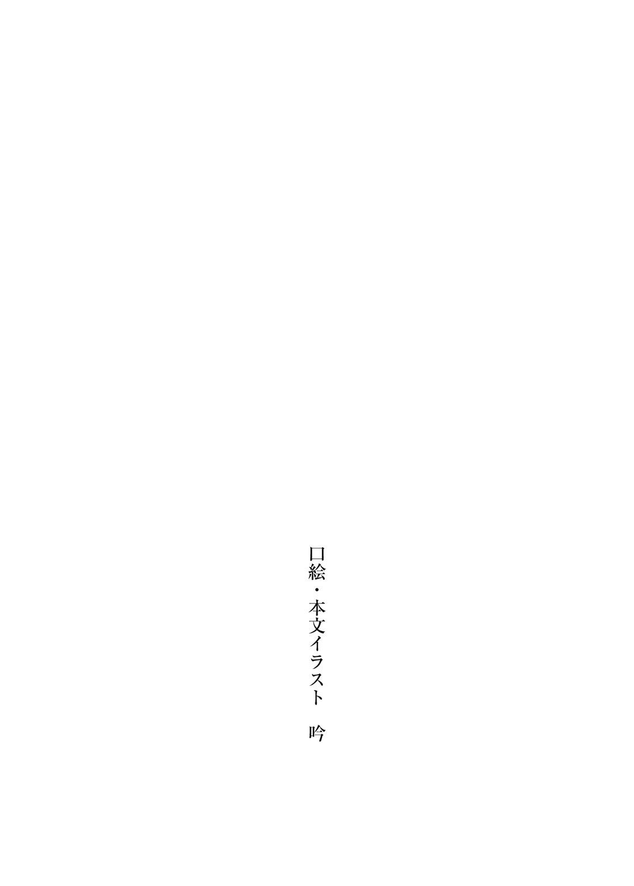

――もう、認めないわけにはいかない。
分かっている。私はどうしようもなく、
気づいた時にはもう
夢に見た。夏希が、
「私が責任取るよ」なんて言って、
そんな未来が
結局、夏希は陽花里ちゃんへの告白が成功して、幸せそうに日々を過ごしている。
だから
怜太くんのことを好きになれば、もう苦しまなくて済むと思った。
そんな後ろ向きな考えで、怜太くんと過ごす時間を増やした。きっと
お昼は
怜太くんは、とても
怜太くんと付き合うことで、周りにも
――だけど私の気持ちは変わらなかった。
いつの間にか目で追いかけているのは、やっぱり
この気持ちを消すために、しばらくは夏希に会わないようにしよう。
そう思っていたのに、球技大会の実行委員のせいで強制的に関わることになって、いざ話せると思ったら幸せな気持ちになって、こっそりと内心で
挙句の果てには、足が
それが陽花里ちゃんと怜太くんへの裏切りになると分かっていながら。
……もう、本当に、夏希に関わるのはやめよう。
私の
ずるい女だ、私は。最悪の人間だ。みんなに合わせる顔がない。
だから、もう二度と、こんな
今なら、まだ
それだけですべてが解決すると、そう思っていた時だった。
「あんたが灰原くんに抱き着いたところを見たって子がいるんだけど、本当？」
何の反論の余地もなかった。
――悪いのは、すべて私だった。
球技大会の翌日。
すでに夜は深まっていた。秋の
ここにいるのは
ぴょんとカールした毛先が
「――お久しぶりっす、
芹香に
「え？ 久しぶりってことは、知り合いなの？」
芹香が驚いたように
驚いているのは俺も同じだ。俺の数少ない昔の知り合いが、こんな場面で登場するとは思わないだろ！ 意外と世間は
「そうっす！ あたし、灰原先輩と中学同じなんで！」
勝手に落ち込んでいる俺とは裏腹に、元気よく返事をする山野。
「あー、なる」と、得心したように芹香は
「それはすごい
「いや、もちろん文化祭ライブを見た時から、灰原先輩がボーカルやってるってことは分かってたんで、偶然ではないっすよ。すみません、説明してなくて……。むしろ、灰原先輩がいるから、このバンドに入りたいって思った部分も一割ぐらいはあるっす」
「……いや、一割しかないのかよ」
驚きから復活したので、どうにか二人の会話に参入する。
まさか、山野とここで再会するとは思わなかった。
一周目の人生では、中学を最後に一度も会わなかったはずだ。今は気さくに話しかけてきている山野だが、こいつは誰にでもこういう感じの態度を取っているだけだ。
別に仲が良かったわけじゃない。あえて会うような理由もなかった。
多分、うちの高校には進学してないと思う。俺が知らないだけかもしれないけど。
……俺たちの文化祭ライブで、山野の進路が一周目と変わった？
山野の進学はこれから先の話だけど、その可能性はあるな。
まあ、こんなことを考えても仕方ないんだけど。
タイムリープをしている以上、俺の行動が本来の歴史を変えていくのは当然だ。
そこを気にしていたらキリがないし、青春の色を変える俺の目的も果たせなくなる。
「あははっ、残りの九割は芹香先輩の存在っすよ！ もちろん！」
山野は悪びれた様子もなく、俺の
こいつは昔からこういう
「それにしても灰原先輩。文化祭で見た時は目も耳も疑ったっすよ。どう見ても灰原先輩じゃない人が、自己紹介でボーカルの灰原
山野は
「そんなに昔と
きょとんとしている芹香の問いに、山野は頷く。
「昔はもっとこう、
あのさぁ……言葉を選ぼうとして選べてなくない？ 闇って何？ 俺、中二病なの？
「俺は高校デビューだからな」
ため息をつきながら、山野の言葉を補足する。
自分から説明するのは、結構
「そういえば、
芹香はどうでもよさそうな感じで呟き、「まあいいや」と話を切り
「とにかく知り合いなら丁度いい。紹介しなくて済むから」
そんなに興味がないなら説明しなくてもよかったじゃん！ 俺の内心の
「今度練習に参加してもらって、トライアウトをするつもり。問題ないよね？」
「ああ、もちろん」と頷く。
かなり驚いたけど、別に異論はない。
そもそも、まったく知らない人よりは知り合いの方が断然ありがたい。
友達は少しずつ増えてきているけど、本質が人見知りなのは変わらないので……。
「てかまあ芹香が気に入ったんだったら、反対する理由はないけどな」
俺や
「まあ、一応ね。逆に、沙耶としても一度やってから決めた方がいいだろうし」
「それはそうか。なんか思ってたのと違うって可能性もあるからな」
今は入りたいって言ってくれているけど、いざ練習したら失望する可能性はある。
主に俺のギターとか。文化祭の出来
「――あ、ごめんなさい！ あたし、そろそろ電車の時間っす！」
ふとスマホを見た山野が
「じゃ、今日のところはこれで。またね、二人とも」
ばいばい、と手を振る芹香。
「ああ、またな」
「先輩、同じ電車っすよね？ 行きましょう！」
俺たちは芹香に背中を向け、駆け足で駅のホームに向かう。
階段を降りると、ちょうど目的の電車が
通勤時間帯よりも遅いこともあり、電車はガラガラだ。まあ俺たちが高崎駅から乗っている私鉄は、通勤時間帯でも大して混むことはないんですけど……。だから大学時代に東京の電車に乗るようになって、真の混雑というものを体で理解したよね。
「えーっと。とりあえず
山野の言葉に「そうだな」と頷き、座席に並んで座る。
……一息つくと、
かと言って、同じ電車で帰るのに
何か話題はないか？ やっぱり昔の話が無難か。
山野を最後に見たのはだいぶ前なので、俺の
「先輩、さっき高校デビューって言ってたっすよね？」
俺が話題を
「……ああ。楽しい高校生活を送りたいと思ったから、自分を変えたんだ」
「意外っすね。中学の時の先輩は、そんな考えを持っているようには見えなかった」
中学の時は確かに、自分から他人と距離を置いていた。
「……あの頃の俺はひねくれてただけだ。本当はみんなが羨ましかった」
そんな内心を
要は、『ぼっち』ではなく『
俺は友達がいないわけじゃなく、あえて作ってないだけ。そう、作ろうと思えばいつでも作れるけど、俺はひとりが好きなのだ！ そう自分に言い聞かせていました！
そんな自己弁護にはすぐに限界が来たんですけどね。
「つまり、あたしと一緒に過ごした中学時代は
山野が不満そうな表情を作って、俺に問いかけてくる。
「そもそも、山野とそんなに一緒に過ごした記憶はないぞ……」
小学校も同じだから、存在自体は知っていた。一学年下の可愛い女の子。
それが山野に対して持っていた認識だ。
だけど俺は山野とほとんど交流のないまま、小学校を卒業した。
山野とまともに会話をするようになったのは、中学二年生になってからだ。
教室に居場所がない俺は、基本的に昼休みは屋上で飯を食っていた。
屋上に
『――あれ、先客がいるんすね……って、灰原先輩？』
そんな俺だけの空間だった屋上に、
『ひとりになれる場所を探してたんすけど……まあ、先輩ならいいか』
あの
『どうも、先輩。今日も元気なさそうっすね』
『……やかましい』
ともあれ、それ以来、たまに屋上で一緒に昼飯を食べるようになった。
……一緒に、なんて表現で正しいのか？ 同じ空間で昼飯を食べているだけの他人みたいな距離感だったけど。何なら人が横たわれるぐらいの距離が物理的に空いていた。
たまに会話をするぐらいで、基本的に俺たちは
友達と呼べるのかも分からない。ただの知り合い。それだけの関係だ。
「……山野は、ドラムやってたんだな」
「あたしは中学の時も軽音部でしたよ？ まあ、
全然知らなかった。
久々の再会だからか、普通に新情報が大量に出てくるな……。
昔の俺が山野に対して、何も聞いていなかったのが原因だけど。まあ中学時代の俺はできる限り人間との交流を
山野は聞かない限りは自分のことを語らないし、それは俺も同じだった。
今日の天気とか、つまらない授業とか、ムカつく先生とか、そういう
だから、俺が卒業するまで続いていたのだと思う。
「先輩こそ、高校からギター始めたんすか？ だいぶ上手かったっすけど」
「お世辞はやめてくれよ……芹香のフォローがないと、聞けたもんじゃないだろ」
「それはちょっと
「隣で芹香が
芹香が弾いているギターは、もはや俺のギターとは別の楽器だと思いたくなるからね。
普通に心が折れそうになったことも一度や二度じゃない。
「あははっ！ それは確かにそうかもっす！」
からからと笑う山野。あの頃に比べると、表情が豊かに見える。
まさか屋上でしか会わなかった山野と、こんな風に再会するとはなぁ……。
「美織先輩とは最近どうっすか？ 同じ高校っすよね？」
急に美織の話になるとは思わなかった。思わず目を
「そういえば仲良かったっけ？」
「はい。家が近所なんで。親繋がりで昔から付き合いがあったっす」
「なるほど。でも、最近どうって言われてもな……」
美織が暗い顔をしていることが増えた気はしている。
何かに
「……もしかして、
山野が
「いや、別に……そもそも、最近はあんまり話してないし」
まともに話したのは、球技大会の何日か前に公園でバスケをした時が最後だ。
避けられているようにも感じる。
「小学校の時はあんなに仲良かったのになー。いつも、あの四人で」
……四人、か。残りの二人は、
小学校の頃は、俺、美織、拓郎、修斗の四人でつるんでいた。
リーダーは美織で、俺たち三人は美織の背中を追いかけてばかりだったけど。
「よく覚えてるな。そんな昔のことを」
まあ山野にとってはまだ四、五年前ぐらいの話か。
俺はそこに七年追加されているので、昔の記憶が曖昧なんだよな。
はっきりと覚えているのは一周目の高校時代だけだ。
それより前は、印象的な場面ぐらいしか覚えていない。
「そりゃー覚えてるっすよ。先輩たち、目立ってましたからね」
「でも中学の時はほとんど美織と話してないことも、お前は知ってるだろ」
「高校で仲直りしたって、美織先輩は言ってたっすけど？」
まあ……な。最近はまた、
美織と高校で再度仲良くなった
要は俺の高校デビューを美織に手伝ってもらった話だ。
「――そんなわけで俺たちの協力関係は終わった。最近あんまり話してないのは、そのせいだ。クラスが違うし、お
山野は、複雑そうな表情で俺の話を聞いていた。
「そっか。そういう感じだったんすね。なるほどな……」
ぶつぶつと、何かに
「……ちょっと、意外っすね」
「何がだ？」
「灰原先輩は、美織先輩が好きなんだと思ってました」
さらりと言う山野。……俺が、美織を？ まさか、と笑い飛ばそうとして、なぜか言葉が出なかった。ふと
「その様子だと、満更でもなさそうっすね」
「……友達としては好きだよ、当然。でも、恋はしていない」
首を横に振る。……本当か？ 自分の言葉に、自信を感じなかった。
他の友達に向ける感情と
「でも、少なくとも、昔は好きだったっすよね？」
山野の問いかけを受けて、失いかけた過去の記憶を
……確かに、今思えば、俺が美織に恋をしている時代はあったのかもしれない。
普通に考えてほしい。昔は
そりゃあんな女子が近くにいたら、たまには好きになることもあるだろう。
それが自然に
「小さい頃の話だ。自覚もなかった」
「あ、認めるんすね。へぇ、やっぱり、そうだったんだ～」
山野はにやにやと笑いながら、
「こっそり教えちゃいますけど、美織先輩の
ささやくように山野は言う。
昔の俺が聞いたら嘘だって断定するけど、今は何となく信じられる。
それに、結局は昔の話だ。
真実であれ、嘘であれ、今に何か
「どうでもいいよ。お互いに、今は違うんだから」
過去がどうあれ、俺が好きなのは
だから、余計なことを考える理由はない。
「……ま、それもそうっすね」
そんな話をしている間に、電車が地元の無人駅に到着する。
山野と一緒に降りたものの、さっそく家の方向が別のようだった。
「じゃ、先輩。あたしはこっちなんで」
「ああ。じゃあ、また。すぐに会うだろうけど」
「そっすね！ 先輩にあたしの
にしし、と笑った山野は、ふと神妙な表情に切り替わる。
「――それにしても、先輩、変わったっすね」
「ん？ ああ……中学の時はだいぶ太ってたからな」
「外見じゃなくて、まあ、それもあるっすけど……今言ってるのは中身の話っすよ」
まあ昔の俺を知っている山野からすれば、そういう感想になるだろうな。
「中学の時はもっと、他人を
「なんでわざわざ悪く言うんだよ……」
苦言を
山野の言う通り、中学時代の俺はだいぶ接しにくい人間だったと思う。
中学でぼっちになった俺は、人間不信気味になり、自ら他人を拒むようになった。
オタク
でも、それは強がりだ。俺が本当に望んでいたのは、友達と笑いあえる青春だった。
だから、地元から少し
「ま、あの頃の先輩は、あの頃のあたしにとっては居心地よかったんすけどね。だから屋上で一緒にいたんすよ？ 先輩が、あたしに何の興味も持たなかったから」
山野は昔を
……
何の事情もなく、わざわざ
一年生のクラスに、
それが山野だったのかどうかは、俺には分からなかったけど。
「先輩が無言で卒業しちゃったから、言いそびれてたっすけど――」
何をするかと思えば、山野は深々と頭を下げた。
「あの頃は、ありがとうございました。これからも、よろしくお願いします」
そんな
「……これからもよろしくするとは、まだ限らないだろ？」
「あっはは！ そうでした！ まずはトライアウトに合格しなきゃっすね！」
山野は
「それじゃ、今度こそ帰るっす！ また今度！」
軽く手を挙げて答えると、山野はぶんぶんと手を振ってから、背を向ける。
「……山野、か。懐かしいな」
去っていく背中を見つめながら、改めて呟く。
一周目では、中学卒業以降は山野と出会っていない。
自分の行動を変えれば、思わぬ
……美織の時も同じだったな。
たまたまランニングをしていなければ、入学前に再会することもなかったし、たまたま怜太と一緒のグループに入らなければ、協力関係を結ぶこともなかった。
今の俺があるのは、美織のおかげだ。
自分ひとりでは、俺の青春は灰色のままだった。
そう思うと、このまま美織との距離が離れるのは、やっぱり嫌だ。
俺はあいつにたくさんのものをもらったけど、まったく返せていないのだから。
＊
今日はバイトのシフトが入っている。
「行きましょう、灰原くん」
「そうだな」
一緒にシフトが入っている
「じゃあねっ！ 二人とも！」
陽花里が笑顔で俺たちに手を振ってくる。今日も俺の
ちなみに今日、陽花里は文芸部の活動がある。最近は文芸雑誌を作っているらしい。
小説賞への
「いいの？ 陽花里は。私が灰原くんと二人で帰っても？」
七瀬はくすりと笑って、からかうように
まあ……正直、俺もちょっと気になっていた点ではある。
いくら同じグループでも、異性と二人きりなのは、どうなんだろう。
でも同じバイト先に向かうのに、あえて別行動をする理由も特にないんだよな。
それに、「俺は陽花里と付き合っているから、もう二人でバイト先には行かない」とか急に言い出したら、だいぶ感じ悪くない？ というか自意識
まあ結局は、陽花里がどう思うかによるんだけどね。
「他の人ならちょっと嫌だけど、
陽花里は説明しながら若干照れてきたのか、最後の方は小声になった。
そんな態度を取られると、俺も照れる。でへへ。
「そう？ じゃあ
なぜか七瀬は、俺の手を取って歩き出した。
七瀬に手を引っ張られて、慌てて俺も歩き始める。
「だ、
「あら？ 束縛はしないんじゃないのかしら？」
「
「灰原くんに触っていいのは、自分だけってことかしら？」
「……そ、そういう、ことだけど……？ 何か文句ある？ わたし恋人だけど？」
七瀬に反論する陽花里だが、顔が真っ赤なのでまったく
「おい七瀬、あんまり陽花里をからかうな」
「ごめんなさい。最近は陽花里の反応がとても面白いから」
「まあ否定はしないが……」
「ちょっと否定してよ!? 夏希くん!?」
「
七瀬は
「わたしも
意外な一言に目を見張る。
陽花里と一緒にバイトかぁ、それもアリですね。
「
「そ、そこは……
言葉とは裏腹に、弱気になる陽花里。
最近は自分の意見を通せるようになったけど、流石に何でもとはいかないらしい。
「そもそも残念ながら、今はバイトの
「まあホールの人数は足りてるからな……」
「何で夏希くんは、わたしがキッチンに応募する可能性を
ずい、と陽花里が顔を寄せてくる。笑顔なのに
「いや、だって……ねぇ？」
「陽花里が料理できるなんて情報はないわね」
七瀬と目を合わせて言葉を
「もう、分かったよ。今度夏希くんにお弁当作ってこようと思ったけど、なしね」
「ええっ!?」
好きな女の子の手作り弁当だと!?
そんな青春
食べてみたい。そして、あわよくば陽花里とイチャイチャしたい。
この際、味はどうでもいいのだ。
「ご、ごめん！ ぜひ！
陽花里の手作り弁当に
「な、なんでそんな必死なの……？」
そんな俺の急変を見て普通に引いている陽花里。グサッと心にダメージ！ つい俺の中のオタクが顔を出してしまったぜ。
「だ、だって、食べてみたかったから……」
「……仕方ないなぁ、夏希くんは。じゃあ、今度作ってきてあげるね」
ふふっ、と笑って、陽花里は約束してくれた。ウオオオオ！ 俺が優勝！
「イチャついているところ悪いのだけれど、そろそろ行かないと間に合わなくなるわよ」
冷や水を浴びせるような言葉だった。
しまった、完全に陽花里しか見えていなかった……。
これが二人の世界ってやつか？ まるで俺たちがバカップルみたいじゃないか！
ＴＰＯを
「そ、そうだよな！ じゃあ七瀬、バイトに行こう！」
「う、うん！ わたしは部活行くから！ また来週ね、二人とも！」
ギクシャクしたやり取りを経て、陽花里と別れる。
陽花里の顔は真っ赤だったが、多分俺も同じだったと思う。
「また来週……ってことは、週末は遊ばないの？」
「ああ。今週末はバンド活動があるし、陽花里も家で小説の続きを書くって」
それに、毎週遊んでいられるほど金に
「陽花里にとっては良い休養ね。
「……心臓が持つようにしてもらわないと困るなぁ」
まあ俺も人のことは言えないけど。
実際、好きな人と……恋人と一緒にいるのは、ちょっと
とても幸せだけど、大切な分だけ、
それに、まだ付き合い始めたばかりだから、お互いに距離感を測りかねている部分がないとは言えない。どの段階まで許されるのかなんて、そればかり考えてしまう。
「それだけ愛されているのよ、貴方は。ちゃんと自覚を持ちなさい」
「……分かってるつもりだよ」
「陽花里を悲しませないようにね？」
七瀬の
「当然、幸せにするよ」
「そう、灰原くんならできると信じているわ」
七瀬はくすくすと、
最近の七瀬は、俺たちの様子を観察するのが趣味らしい。
＊
今日のバイトは、午後六時から十時までだ。
現在シフトに入っているのは四人。キッチンは俺と店長で、ホールは鳴と七瀬。
黙々と業務をこなしていたら、九時を過ぎていた。夕食時も終わり、客が
「そういえば、明日は久々のバンド練習ですね」
昨日の俺と芹香の話は、当然ＲＩＮＥのグループチャットで鳴にも共有している。
山野と俺が知り合いということも
「練習っていうか、メインは山野のトライアウトだけどな」
まあ芹香が認めている時点で、加入は確定しているようなものだが。
鳴もそれが分かっているから、山野の加入を前提に話しているんだろうな。
「その山野さんって、どんな人なんですか？」
「……まあ、明るいタイプかな？ 接しやすいとは思うぞ」
まあ説明できるほど、山野のことを知っているわけじゃないけどな。
表面上はグイグイ来るけど、内心はあまり
「あ、明るい……ちょっと怖いですねぇ……」
無難に紹介したはずなのに、鳴は急にビビり始める。
「暗い奴の方が良いのか？」
「いやぁ……それはそれで関わりにくいんで……」
じゃあ、どんな奴がお望みなんだよ。
まあ
「
そう言って肩をすくめると、鳴はぷっ、と勢いよく
「よくないですよ夏希！ そんなこと言うなんて！」
「笑うってことは、お前もそう思ってたんだろ？」
「い、いやぁ、そんなことはないですけどねぇ～？」
鳴は何も聞こえなかったかのように、下手な口笛を
「もしかして、バンドの話？」
俺たちの会話を聞いていたのか、七瀬が問いかけてくる。
「ああ。芹香が新しいドラマーを見つけてきたんだ。まだ中三なんだけど」
「そう。
「問題は
ブツブツとネガティブな
山野はそんなことを言い出す性格じゃないけど、
「
「全然駄目ですよ……いまだに手を繋ぐので
ははは……と、鳴は
分かるぞ、鳴。
「貴方には、そろそろ慣れてもらわないとね？」
「は、はい……」
どうやら、いつまでも
「まあ何をやっても上手くこなせるのだから、せめて恋愛ぐらいは下手でいてもらわないとムカつくけれど。でも陽花里は陽花里で駄目な方の妄想系オタク女なのよね……」
ひどい言われようだった。俺も陽花里も。
学校のアイドルである陽花里を妄想系オタク女と評するのは、七瀬しかいない。
まあ、そもそも学校のアイドルが
三人で雑談をしていると、からんと
そっちに目を向けると、うちの制服を着たひとりの女の子が入ってくる。
「あれ……？ 鳴、お前の彼女だぞ」
眼鏡をかけた
「え、ええっ!?」
「
目を見開いている鳴の背中を
「な、なんでここに……？」
「えっと、バイトしてるところ、見たかったから……」
そんな
お互いに緊張していてぎこちないけど、仲は良さそうで何よりだ。
でも、何だか見ているこっちが恥ずかしくなるな……。
「貴方たちを見ている私の心境が分かった？」
「うるさいな。わざわざ言われなくても自覚ぐらいあるよ……」
俺たちも
「二人とも、幸せそうね。貴方が手助けしたのでしょう？」
「大したことはしてないけどな。元々
球技大会の日から付き合い始めたという話だから、まだ二日しか経ってない。アツアツの時期だ。まあ俺たちも付き合って二週間ぐらいだから、人のことは言えないけど。
「……そういう七瀬はどうなんだ？ 好きな人とかいないの？」
どこか
そういえば七瀬から誰かを好きとか、彼氏が
「そうね……好き、とまではいかないけれど、気になっていた人はいたわ」
意外な話が出てきて、びっくりする。
七瀬の淡々とした口調は、冗談のようには感じない。
「……いたってことは、過去形なのか？」
「残念ながらね。私は他の子のように、本気の
なるほどな……とは思いつつ、ちょっと反応し
どこまで
俺から話を
「いつか、見つかるといいな。その本気の恋ってやつ」
結局、出てきたのはそんな台詞だった。月並みで、
七瀬はなぜか俺の額をデコピンで弾く。
「あいたっ！」
「私のことを気にするよりも、貴方は陽花里を大切にしてあげなさい」
七瀬はそう言って、微笑む。
「……言われなくても、そのつもりだよ」
鳴たちの微笑ましい光景を
そんな雑談をしているうちに、喫茶マレスの夜は
＊
翌日は土曜日だった。
早起きしてしまったので、
休日だし
「お兄ちゃん、朝ごはんは？」
「食パンでも焼いとけ」
ねだってくる
リビングに戻ると、母さんと波香がいた。結局、母さんが波香の朝飯を用意している。
「夏希も食べるかい？ 簡単なものだけど」
俺に気づいた母さんがそう尋ねてきたので、
「お兄ちゃんが用意してくれなかったから、ママに用意してもらったよ」
「お前には自分でやるという発想はないのか？」
「あたし、料理できないから！」
そう
「お兄ちゃん、今日は何するの？」
「バンドの活動があるから、もうそろそろ出るよ」
山野のトライアウト
「あれ？ 解散したんじゃなかったんだ？」
「いったんは休止したけどな、再始動することになった」
「確か、ドラムの人が受験で
「ああ。だから、新しくドラマーを見つけてきたんだ。まだ確定じゃないけど」
「ふーん……良かったじゃん？ まあ、あんまり興味ないけど」
波香はスマホを眺めつつ、
興味がない人の聞き方じゃないけど、まあ
そもそも観客席でペンライトを振っていたのは、なかったことにしたいのか？
「新しいドラマー、俺の一個下で、お前の
「うちの中学ってこと？ そういえば軽音部あるよね」
「山野沙耶って知ってるか？」
「あー、うん……名前は、聞いたことあるけど」
「名前はってことは、話したことはないのか？」
「うん。関わりはないよ。上級生だし、部活も
波香は朝食を平らげると、「ごちそうさま」と言いながら手を合わせる。
「でも、そっか。あの人がお兄ちゃんとバンドやるんだ」
ぽつり、と。波香は窓の外を眺めながら
「何か気になることでもあるのか？」
妙に思うところがありそうな表情だったので、そう尋ねる。
「んー、別に。……ま、
しかし、波香はそう言って自室に消えていった。おい、皿は片付けろ。
「母さん、片付けは俺やるよ」
仕方ないので、母さんに家事の手伝いを申し出る。
「はいはい、助かるよ。お願いね」
一周目は母さんに
その代わり、波香がどんどんだらしなくなっている気もするけど……おかしいな、一周目は俺の何倍もよくできた妹だったのに、なんか最近は妙にポンコツ感がある。
……もしかして、俺のせいか？ 俺が波香をポンコツ化させている？
答えの出ない問いに悩みながら皿洗いを終えると、丁度良い時間になった。
身だしなみを整えて家を出る。
気温は十五度。少し寒いが、今日はコートを着るほどじゃない。
電車に乗り、芹香が予約した音楽スタジオに向かう。
場所は高崎駅から少し歩いたところだった。芹香はよく使うらしい。
「あ、夏希！ おはようございます！」
鳴が俺を見て、ぱぁっと目を
部屋の中には、すでに鳴と芹香がいた。それぞれ楽器のセッティングをしている。
芹香はギターに集中しているのか、無反応だった。
「早いな、二人とも」
「久々の練習ですからね！ テンション上がっちゃって！」
べんべんべん、と鳴はベースを適当に鳴らしながら、上機嫌に言う。
「山野はまだみたいだな」
「さっきＲＩＮＥしたら、もうすぐ着くって言ってたよ」
芹香がスマホの画面を見せてくれる。山野とのトーク画面だった。
『もうすぐ
「先輩がた！ おはよーございます！ すみません！
バーン！ と勢いよく
息を切らしている。芹香のスタンプのせいで、
「おう」
「おはよ」
俺と芹香は
「……お、おはようございます……」
「初めまして！ 篠原
山野は鳴の手を
「よ、よろしく……？」
「はい、よろしくっす！ 篠原先輩のベース、かっけーっす！ 感動したっす！」
どっちが先輩なのか分からないような光景だ。
「はいはい。時間もないし、さっさと始めるよ。準備して」
芹香が手を
「よ、陽キャだ……陽のオーラを感じる……でも
鳴は何やらぼそぼそと呟いている。山野に
「んー、こんな感じっすかね……」
一方、スタジオ備え付けのドラムセットの調整を終えた山野は、手慣れた様子でドラムスティックをくるくると回す。それから
叩いているのは知らない曲だったが、とてもリズム感が良いことは、聞いているだけでよく分かった。確かに
……芹香の
「みんな準備できたら、『black witch』からやろうか。沙耶もできるよね？」
山野のドラムソロが終わると、芹香が提案してくる。
「もちろんっす！ ミシュレフの曲は完全に暗譜しました！」
山野が鼻息
「久々だから、ちゃんと指が動くか不安ですね……」
ベースを構えた鳴は、自信なげに呟く。
「それじゃ、スリーカウントで始めるっす。いいっすよね、先輩？」
山野の
どうやら一気に通しでやるつもりらしい。
そして曲が始まり、激しいロックサウンドがスタジオに響く。
久しぶりだ。俺の声が、ギターの音色が、曲に
――山野のドラムはアグレッシブだった。表現豊かで、
岩野先輩がいた時とは、違う。
これは、また新しい『black witch』になっている。
とはいえ現状、山野とリズムを
岩野先輩がいる時と
だけど、ポテンシャルを感じる。もっと良い演奏ができるという確信がある。
「……ど、どうっすか？ ミスったとこもあるっすけど」
演奏が終わった直後、山野は
曲の最中はあんなに楽しそうに叩いていたくせに、そのギャップが面白い。
「あっ！ な、なんで笑うんすか!? こっちは
わたわたと動揺している山野。芹香が俺たちに視線をやる。
「……どう思う？ 鳴、夏希。私は、この子のドラム好きなんだけど」
俺は鳴を見る。鳴も俺を見ていた。お互いに黙っている。
「……」
「……」
山野は運命を待つような表情だった。
「いや、そんなの、言うまでもないですよね……」
「まあ、そうだな……」
俺と鳴はそう言って、頷き合う。
ガーン！ という効果音が似合いそうな表情で、山野は
「そ、そんなぁ……」
「何アホな顔してるんだ。合格に決まってるだろ」
「むしろ、なぜ不合格になると思ったのか不思議なぐらいでしたね」
山野は目を見張り、「ええっ!?」と
「あんまり
芹香は口端を
だって、あまりにも真剣な顔で俺たちを見ているから、つい……。
「び、びっくりさせないでくださいよ～」
ほっとしたように、山野は
そもそも、山野に対して合格なんて
「それじゃ、沙耶を加えて、この四人で再始動ってことで」
「バンド名、ミシュレフのままで行くのか？ それとも変える？」
「んー、岩野先輩がいる時とは別のバンドだし、新しい名前を考えようかな」
もう俺たちは、期間限定の余り者寄せ集めバンドじゃないからな。それが良いと思う。
「当面の目標は、私がバイトしてるライブハウスに出演することかな」
「ラ、ライブハウス……ちょっと怖いですね……」
「でも、やっぱり目指すのはそこだろ。文化祭も過ぎたからな」
それに目標がなければ、何のために練習しているのか分からなくなる。
音楽を合わせているだけで十分楽しいけど、やはりライブの快感は
文化祭の時のように、観客と一体になる感覚をもう一度味わいたい。
「いやいや、夢が小さいっすよ先輩がた！ ロッキン出ましょうロッキン！」
山野は笑顔で
「夢を大きく持つのはいいけど、まずはちゃんと腕を
芹香は淡々と山野を
文化祭は盛り上がったけど、まだ俺たちのバンドは未熟だからな。
芹香は例外だけど、特に俺のギターが下手すぎて笑えない。文化祭で何もかも上手く弾けたのは、
「山野は、受験は
「あたしは多分、推薦で行けるっす！」
「へえ、頭良いんだな」
推薦で行けるってことは、学年トップクラスの成績を
「じゃあ、心配はいらないな」
俺の言葉に、山野はピースサインを作って応じる。
「それじゃ来週から沙耶も加えて、本格的に練習していくよ」
「
「分かりました！」
「……ああ。また、頑張ろう」
みんなで頷き合う。
そんなわけで、バンド活動の再開が決まった。
青春の楽しみがまた一つ増えた。すでに
この新しいバンドは、きっと俺の青春に新しい色をつけてくれる。
「そういえば……夏希」
ふと思い出したように、芹香が尋ねてくる。
「昨日、美織が学校を休んだけど、何か聞いてる？」
「え？ いや、特に何も……
「教師はそう言ってたけど、美織から返信がないんだよね」
芹香はスマホを見ながら、小首を
「あいつも風邪とか引くんだな」
子供の
「……ただの風邪なら、いいんだけど」
「そろそろインフルエンザも
確かに、ちょっと心配だ。俺の言葉に、芹香は「まあ、ね」と
芹香はそれ以上美織のことには触れず、練習を再開する。
……まあ一日休んだだけだし、そこまで気に
今は美織のことより、練習に集中しないとな。俺が一番下手だから、もっと成長していかないと山野になめられてしまう。いや、それは
＊
昼
芹香たちとは高崎駅で別れ、山野と一緒に電車で帰っている。
山野は練習初日で疲れているのか、しばらくぼうっと窓の外を眺めていた。
「……そういえば先輩って、
「ああ。陽花里のことを知ってるのか？」
「あの人、ミンスタで有名っすから。友達はモデルだと思ってました。めちゃくちゃ
足をじたばたさせながら、
波香も同じことを言っていたけど、やっぱり陽花里は地元で有名らしい。
「なんで先輩を選んだんすかねぇ～？」
「おい、やめろ。それは俺が一番疑問に思ってる」
「まあ確かに、昔に比べたらカッコよくなってるっすけどね？」
美織にしろ、山野にしろ、昔の俺を知っている連中はこういう反応をする。
最近は過大評価されることも多かったので、なんか安心する。
「陽花里にアプローチするために、美織がいろいろと協力してくれたんだよ」
山野はなぜか「それもなぁ～」と呟いて、両手で顔を
「ちなみに美織先輩は、その
「普通に、仲良さそうにしてるぞ。二人で一緒に帰ってるところも見かけるし」
「そうなんすね……」と、山野はなぜか疑うように
「美織から直接聞いたりはしてないのか？」
「んー、まあ、やり取りはしてるっすけどね……」
お茶を濁すような言い方だった。
まあ通っている学校が
「白鳥先輩の写真あるっすか？ 見てみたいっす」
そう聞かれたので、スマホの写真フォルダを
俺が持っているのは、夏の旅行の時の集合写真ぐらいだった。
女子
「うわ、イケメンだ。灰原先輩とはレベチっす」
「いちいち俺を下げないと気が済まないの、性格悪くない……？」
「まあ美織先輩は自称面食いっすからねぇ……あくまで自称でしかないんすけど……」
山野は俺のスマホに映る写真を見ながら、何やらブツブツと呟いている。
「何かおかしいか？」
そう
「いや、別に先輩は何もおかしくないっす。気にしないでください」
そう言われても、気になるんだが……と言おうとした
俺たちの地元駅に到着したようだった。
「そんなに美織のことを気にかけてる理由って、何かあるのか？」
電車を降りながら、ふと気になって山野に問いかける。
仲が良いのは知っているけど、やけに美織の話ばかりに食いついてくる気がする。
「……まあ、今ちょっとだけ、相談を受けてまして」
山野は言葉を濁した。それ以上言えることはないと、暗に示している。
……相談か。美織が相談相手に選ぶのは、もう俺じゃないんだな。
美織が何かに
その内容を、山野には打ち明けているのだろう。少し羨ましかった。
「それじゃ、先輩。これからバンド、一緒に頑張るっすよ！」
山野は話を打ち切るように別れの
＊
バンドが再始動した翌週は、
月曜のバイト、火曜のバンド練習を経て、水曜日の昼休み。
ちょうど球技大会から一週間が経過している。
「え、美織が休んでる？」
「うん。球技大会の後から、ずっとみたいだね」
教室の
「怜太は何か聞いてないのか？」
「……ＲＩＮＥしても、何も反応がないんだよね」
怜太は心配そうな顔でスマホを眺めている。
「あたし、
「ただの風邪にしては、長引いている気がするわね」
みんな、美織のことを心配している。
……同じクラスの芹香なら、何か知っているかもしれない。
「ちょっと芹香に聞いてみるよ」
そんなわけで芹香を探していた時、女子トイレの前を通りかかった。
――声が、聞こえてくる。
「
「なんか見た人いるらしいよ。公園で灰原くんに
「うわ、マジ最低じゃね？ あいつ、ちょっと顔良いからって調子乗ってない？」
「前に灰原くんとはただの
思わず足が止まる。
……こいつらは、何を言っている？ 言葉の理解が、できなかった。
しかし、当人たちが女子トイレから出てくる気配があったので、急いで離れる。
何も聞かなかったかのように少し歩いてから、後ろを振り返る。
あの
その中心にいるのは、確か
男子連中で一年の可愛い女の子の議論をした時、陽花里や美織と一緒によく名前が挙がるので、覚えている。ただし、性格はキツいとも言われていたけど。
「……どうするか」
思考が纏まらない。
俺は、どうすればいい？
……落ち着け。まずは、
ただの
もちろん、美織が俺と怜太両方に手を出している――という噂は、嘘だ。
だけど、球技大会の数日前の出来事を思い出す。あの夜の公園で、転びそうになった美織を抱き
あの場面は、美織から俺に抱き着いてきたように見えるだろう。だから『俺が美織に手を出した』ではなく、『美織が俺に手を出した』という風に噂が広まっている？
その場合、どういう立ち回りをすれば誤解が解けるんだ？
……
何にせよ、まずは情報収集だ。
この噂がどこまで広まっているのか、誰が広めているのかを調べなければ。
美織が休んでいる理由も、この噂に関係しているのかもしれない。
「おーい夏希、そろそろ昼休み終わるぜ」
遠くから声をかけられて顔を上げる。
「ああ、分かった」
気になることはいろいろあるが、授業はサボれない。大人しく教室に
それとなく周囲を観察すると、主に一組の女子生徒が俺を見ている気がする。
……一組の女子の間では、もう噂が広まっていると見てよさそうだな。
良くも悪くも、俺たちは目立つ。
俺と陽花里、怜太と美織は、この学年の二大カップルとも言われているらしい。
そのうちの二人のスキャンダルとなれば、みんなの
この
教室に入り、席に着く。教師が入ってきて、授業が始まる。
しばらく周囲を観察していたが、二組の生徒から嫌な視線は感じないな。
まだ二組には広まっていないようだ。でも時間の問題だろう。
この手の噂は気づいたら全体に広まって、余計な
事実無根なんだ。そうなる前に、できるだけ早く対処したい。
「……夏希くん、どうかしたの？」
俺がずっと難しい顔をしていることに気づいたのだろう。
陽花里になんて言うべきか、迷う。伝えるのか、黙っておくのか。伝えるとして、何をどう伝える？ 俺もまだ、今の状況をちゃんと
「……ちょっとな。後で話すよ」
少し考えた末に、そう答える。
陽花里は俺の
もし噂が陽花里にも回ってきたら、不安にさせてしまう可能性もある。
ただ、今は授業中だし、すぐに終わる話じゃない。
落ち着いて話せる場を作らないといけないな。
＊
そして放課後になった。
竜也たちが部活に行き、七瀬もピアノの練習だそうで、俺と陽花里だけが残る。
「さっきの話、聞いてもいい？」
陽花里が問いかけてくる。教室では、まだ帰宅部の面々が雑談している。
「ああ。ちょっと移動してもいいか？」
できるだけ他人には聞かれたくない。
俺は陽花里を連れて、人気のない階段の
振り返ると、陽花里は不安そうな顔をしている。
まあ、まだ何も説明していないからな。
「……それで、何があったの？」
「どうも、嫌な噂が流れてるみたいなんだ。主に、一組の女子の間で」
俺の言葉を聞いて、陽花里は目をぱちぱちと
「どんな噂なの？」
「美織が……怜太と付き合いながら、俺にも手を出している、みたいな内容だ」
説明しづらいが、これを言わないと話が進まない。
陽花里は「そう……なんだ」と、感情が読めない表情で反応した。
「もちろん、そんな事実はない」
まず、そこを断言しておく。陽花里の不安を取り除くためにも。
「そこは疑ってないけど……じゃあ、どうしてそんな噂が？」
陽花里の疑問は当然だ。
正直、陽花里に誤解されるのが
だから問いかけてくる陽花里に対して、言葉に詰まる。
「――美織が夏希に抱き着いたところを、見たって人がいるからだよ」
そう答えたのは俺じゃない。後ろからの声だった。
振り返ると、そこには芹香が立っている。
「……なんで、ここに？」
聞いていたのか、と尋ねる前に、そんな問いが口から
「夏希を探してた。放課後に次の練習の日程を決めようって話したよね？」
あ……そういえば、そうだった。すっかり頭から抜け落ちていた。
「まあ、そんなことしてる場合じゃないかもしれないけど」
芹香は
基本無表情の芹香が、音楽のこと以外で感情を
「えっと……どういうことなの？」
陽花里が改めて聞いてきたので、ちゃんと答えないといけない。
「……多分、球技大会の数日前のことだと思うんだ」
俺は今、陽花里を不安にさせている。
だからこそ、誠実にすべてを話す必要がある。
「あの日の放課後、俺は鳴と公園でバスケの練習をしてたんだ。鳴も球技大会でバスケに出場することになったから、俺が教えるって形で。そこに、たまたま通りかかった美織も
俺の話を、陽花里と芹香は
「あの場面を誰かが見ていたら、美織から俺に抱き着いたように見えたとしても、おかしくはない。今流れている噂に
「……なるほどね」と、芹香は
「もしかして、美織ちゃんが休んでるのって、その噂に関係してるの？」
「分からない。俺もその噂をたまたま聞いて、調べようとしてたところだから」
ふるふると首を横に振る。「そっか」と、陽花里も
「……とりあえず、私が知っていることを話すよ」
そんな
「一組の女子の間で、今夏希が言ったような内容の噂が広まってるのは事実。そっちのクラスに噂が流れるのも、時間の問題だと思う。みんな、こういう系の話好きだし」
あまり当たってほしくはなかった俺の予想を、芹香が
「実際に見たって言ってるのは、一組の
芹香の言葉に「あ、眼鏡かけてて、大人しい感じの人だよね？」と陽花里が反応する。
俺には心当たりがない。あまりクラスで目立つタイプではないのだろう。
「そう。でも、広めてるのは水瀬じゃなくて、長谷川グループかな」
「……やっぱりか。俺がその噂をたまたま聞いた時も、長谷川がみんなに話してたよ」
「まあ……長谷川さんって、あんまり美織ちゃんと仲良くないんでしょ？」
そうなのか？ 俺はまったく知らないが、芹香は当然とばかりに頷いている。どうやら女子の間では共通
「美織は可愛いし、女バスのエースだし、あれで勉強もできるし、学年一モテる怜太くんと付き合ってるし、その次にモテる夏希とも幼馴染だから、わりと敵は多い。味方もいるけど、美織は気が強いからね。陽花里ちゃんみたいに誰とでも仲良くできるタイプじゃないから、
まあ表面上は取り
だいぶ我の強い性格だし、合わない人はいるよね。
「一組は元々、長谷川中心のグループと、美織中心のグループで対立気味だったの」
まあ
「そ、そうなのか……ぜんぜん知らなかった」
「まあ、女子にはいろいろあるから。男子はだいたい知らないと思うけど」
そう陽花里が補足する。女子の世界、なんか怖いよう……。
「長谷川さんが美織ちゃんの弱みを見つけたら、確かに喜んで広めるだろうね」
「実際、水瀬に話を聞いてみたら、『美織から抱き着いたように見えた』って話を友達としていたら、
芹香のおかげで、おおむね事態の全容が見えてきた。
……俺のせい、だな。
俺があの時、美織をすぐに離していれば、誤解されなかったかもしれない。
でも実際には、何秒か抱き留めた体勢のままだった。美織が、動かなかったから。
『あなたのこと好きだよ……って、言ったらどうする？』
あの時の光景が
「……夏希くん？」
気づけば、陽花里が俺をじっと見ていた。
「いや、ごめん。何でもない」
「……本当に、何でもないんだよね？」
陽花里は、再確認するように尋ねてきた。
「……事実無根だったら、美織ちゃんなら否定すると思うんだけど」
「私も、そう思う。ムカついたら喧嘩売りに行く子だし」
二人はそんな風に
美織はそんなくだらない噂に負けてしまうような、気の弱い人間じゃないはずだ。
「心当たりがあるとしたら、さっき説明したことだけだよ」
多少気になることはあるものの、俺に言えるのはこれだけだ。
それ以外のことは推測でしかない。美織の気持ちを俺は知らないから。
芹香は、状況を整理するように言う。
「……美織が何を考えてるのかは、分からない。球技大会の翌日からずっと休んでるし、聞く機会もない。そのせいで、余計に噂が
陽花里は真剣な表情で頷き、芹香に続きを
「私たちのグループも美織を守りたい気持ちはあるけど、本人が休んでいて
本当に
音楽以外のことにあまり興味がない芹香には、とても
「でも、美織は放っておけない。友達だからね」
「そうだね……」と陽花里も頷き、言葉を続ける。
「一番の問題は、美織ちゃんと連絡が取れないことだよね？」
「そう。ただの風邪なら連絡ぐらいは返せるはず。美織はマメな性格じゃないけど、私たちだけじゃなくて、
改めてそう聞くと、事態はより深刻に感じる。
「夏希くん、家近いでしょ？」
「そりゃまぁ……歩いて十五分ぐらいだな」
「美織ちゃんが心配だし、お
陽花里は両手を合わせて、「お願い」と
「……いいのか？ 俺が行っても」
「わたしは、夏希くんを信じてるから」
陽花里は俺の目を見つめて、ゆっくりと頷いた。
「まあ本当に体調不良なのか、それとも別の原因なのか……確かめないとね」
芹香はぽつりと
「分かった。ちょっと様子を見てくる」
……正直、嫌な予感はしている。
本当にただの体調不良なら、ＲＩＮＥの返信ぐらいはできるに決まっている。
だから、何かがあったのは
＊
帰りの電車に乗る前に、美織にチャットを打ってみた。
しかし一時間経過しても、
やっぱり、直接訪ねてみるしかないな。
だけど、やけに体が重たい。嫌な予感がする。
それは、何となく事態の予想がついてしまうからだろう。
俺はただ、その予想が当たっていないことを
電車を降りて、コンビニで見舞いの品を買う。
それから二十分ほど歩くと、美織の家に
住宅街の中にある大きめの古民家だった。美しく整えられた広い庭園に、景観を
昔、来た時から何も変わっていない。
俺が
「おや、もしかして、夏希くんかい？ 大きくなったねぇ」
「こんにちは、おばあさん。お久しぶりです」
四、五年はこの家を
「美織から、よく話は聞いているよ。あの子の言う通り、
「……美織が、俺の話をしているんですか？」
「それはもう。何かにつけて君がああだのこうだのって言ってるよ。格好つけだの、馬鹿だのアホだの、文句ばっかりだけどねぇ。でも、とっても楽しそうに話すんだよ」
ははは……と、
「もう一度仲良くなれたことが、よっぽど嬉しかったんじゃないかい？」
「……だとしたら、良かったです。あいつは
ところで、と会話を区切る。雑談から本題に入るために。
「美織は大丈夫なんですか？ しばらく学校を休んでいるみたいですが……」
「もしかして、お見舞いに来てくれたのかい？」
と、おばあさんが問い返してきたので、俺は頷く。
すると、おばあさんは表情を暗くした。
「どうも体調が悪いみたいでねぇ。部屋にこもって出てこないんだよ」
「……そうですか。少し、お
「どうぞどうぞ。美織も喜ぶよ。ついでにお茶でも飲んでいってねぇ」
「ちょっとここで待っててねぇ」
言われた通り、座布団の上に座って待つ。おばあさんがお茶を出してくれた。何から何まで申し訳ない。一応お見舞いの品を
病人に手間をかけさせるし、風邪が移ったら
まあ
……今回はちょっと
出してもらったお茶を飲みながら、周囲を見回す。
旅番組が映るテレビが置かれた台の脇に、幼い頃の美織と両親の写真があった。
美織の両親は共働きだ。おそらく、まだ二人とも帰ってきていないのだろう。今この家にいるのは、美織とおばあさんだけだ。おじいさんは
しばらく待っていると、再びおばあさんが戻ってきた。
「ごめんねぇ、夏希くん。あの子、今は誰にも会いたくないみたいで……体調はだいぶ回復してるはずなんだけどねぇ。風邪を引くなんて珍しいとは思ってたけど……」
「……そう、ですか」
やはり、風邪ではないようだ。
「もしかして、学校で何かあったのかしらねぇ。夏希くんは知ってるかい？」
「……少しだけ。でも、それが休んでいる原因なのかは、本人に聞いてみないと」
おばあさんと、目線が合う。目を
「美織の部屋の前に行ってもいいですか？」
あいつが俺に会いたくないことは分かった。
だが、素直に引き返したら何も状況は変わらない。
おばあさんは相好を
＊
美織の部屋の前に立つ。
ぱたぱたと足音を立てて、美織が世話をしている犬が近づいてきた。
確か名前はクー、だったかな？ クーは俺の足のつま先の
「……お前も、心配なんだな」
クーの頭をよしよしと
「美織、俺だ。大丈夫か？」
ばさ、と毛布が動くような音が聞こえた。
しかし、声は返ってこない。
「みんな、心配してる。ＲＩＮＥの返信ぐらいはしてくれよ」
反応がなくても、言葉を続ける。
「体調は回復したのか？ 見舞いの品を持ってきたし、ちょっと会えないか？ あ、芹香からプリントも預かってる。休んでる間の宿題とか
できるだけ明るく言ったが、訪れるのは寒々しい
あの噂の件を切り出すべきか、
「……ごめん。みんなには
いまだに扉は開かない。だけど、人の気配がある。
美織は扉を
「今は、会いたくない、誰にも……あなたにも。……だから、帰って」
消え入りそうな声だった。
どう考えても、
「会いたくないなら、このままでいい。だけど、話ぐらいは聞かせてくれよ」
部屋の扉の前で、あぐらをかく。
せめて話を聞くまで帰らないという意思だ。
「普通に風邪引いてるってわけじゃないんだろ？ 何があった？」
「……だいたい分かってるから、ここに来たんじゃないの？」
ぽつりと、呟きのような答えが返ってくる。
「一組で広まってる噂のことなら、耳に入ってきた」
ひゅ、と、美織が息を止めるような音が聞こえてきた。
その反応で確信する。美織が休んでいる原因は、その噂に関係することを。
「確かに、そう見えるような
「……そうかもね」
「噂を広めてる長谷川って女子は、お前のことをあまり良く思ってないらしい。だからなのか、話を
「……別に、話は歪んでないよ」
美織の返答に、
何が言いたいのか、分からなかったからだ。
「長谷川さんたちには、直接
「事実って、どういうことだ？ いったい、何を言って――」
「――分からないなんて言い張るほど、もう
美織に言葉を
少しだけ心当たりがあった。
この予想だけは、当たらないでほしいと祈っていた。
あの日。美織を抱き留めた後、俺が思ったことは何だった？
『ご、ごめん……足が、
『あなたのこと好きだよ……って、言ったらどうする？』
『帰るよ！ 早くしないと、終電なくなっちゃう！』
美織は、
しばらく俺に抱き着いて離れなかったのは、足の回復を待ったのだろうと思っていた。
しかし直後、美織は終電の時間を気にして、さっさと先に走っていった。
『……足、ぜんぜん
その時、俺は――もしかして、と思った。
脳裏を過ったのは、あまりにも俺にとって都合の良い、馬鹿げた
「――全部、わざとだよ」
だけど、その妄想を肯定するように、美織は言葉を続ける。
「だから、言い訳の余地もないんだ。私は怜太くんと付き合っていながら、あなたに抱き着いたんだ。足がもつれたってことにすれば、大丈夫かなって思ったんだ。そんなわけがないのにね。……馬鹿でしょ？ 私は負けたんだ。
美織の声は
俺は何も言えなかった。
何を言っていいのか、分からなかったからだ。
聞きたいことはたくさんあるけど、
だって、その話が本当なら、美織は――俺のことを、好いている。
「みんなに言っておいて。心配かけてごめんねって。でも、噂はただの事実だから、止めようとか、否定しようとか、しなくていいよ。……長谷川さんたちを責めないでね」
その後のことはよく覚えていない。
かけるべき言葉が見つからなくて、
＊（本宮美織）
「……あれで良かったんすか？」
夏希が消えていったことを確認してから、沙耶が問いかけてくる。
「こうするしかないよ。全部、私が悪いんだから」
ベッドの上で体育
その理由は簡単で、勝手に窓から
沙耶は二
「足がもつれたことにしとけばよかったじゃないっすか。実際、大したことじゃないんだから。ちょっと抱き着いたぐらい、
沙耶は軽い調子で提案してくる。
実際、その考えが脳裏を過らなかったと言えば、嘘になる。
「……
ただでさえ悪いことをしたのに、嘘で保身なんて
「
沙耶は
「ごめんね。私から相談してたのに、こんなことになっちゃって」
「あたしは別にいいんすけど……あんまり思いつめ過ぎない方がいいっすよ？」
球技大会の少し前から、沙耶にはいろいろと相談していた。
恋人がいること。好きな人が別にいること。それが、幼馴染の男の子だということ。
今の恋人を好きになりたいのに、それができなくて苦しいこと。
私の悩みは、
沙耶は昔から仲が良いけど、お
「むしろ
「……やめて。夏希は、私のことを
私は、その信頼を裏切ったんだ。そのせいで夏希にも迷惑をかけている。
「……それだけじゃない気がしますけどね。灰原先輩が、すぐに離れなかったのは」
沙耶は窓の外を
言葉の意味はよく分からなかった。私が眉をひそめると、沙耶は苦笑する。
「ま、何にせよ、ずっと
「……そう、だよね。分かってる。そろそろ、学校に行かないと」
長谷川さんたちによる悪い噂のせいじゃない。夏希たちに顔向けできないからだ。
「……沙耶だったら、どうする？」
そう問いかけると、沙耶は「うーん」と
「あたしは先輩ほど
……そうだよね。沙耶の言う通りだ。結局、このままだと逃げているだけなんだから。
とにかく、まずは迷惑をかけた人たちに謝らなくちゃいけない。
日が
文化祭三日目の夕方。一組の教室には誰も残っていなかった。
クラスの出し物の営業時間も終わり、残すところは、中庭のステージで行われている軽音部のライブだけ。窓の外を見ると、今も軽音部のライブで盛り上がっている。
……
それなのに、私が中庭に向かわず、がらんとした教室に残っている理由はひとつ。
「一組も、誰もいないんだね」
声が聞こえた。振り返ると、扉を開いて教室に入ってくる人がいた。
私が残っていた理由は、怜太くんに呼び出されたからだった。
「……ってことは、二組も誰もいないんだ？」
「みんな夏希たちのライブを観に行っちゃったよ。まだ後片付けがあるんだけどね」
「……怜太くんは行かないの？」
「いや、行くよ。少し君と話した後にね」
そう言って怜太くんは、窓際に立つ私の二歩先の
怜太くんと、視線が合う。目が
「
え、と言葉に詰まる。察しなんて、ついてない。何の話なのかも分からない。
「怜太くん……？」
小首を
いつも
怜太くんはそれから、しばらく黙っていた。その
誰もいない教室に、男女が二人きり。それも結構仲が良い二人だ。
もしかして……と私が思った
「――好きだよ、美織。
嘘や
怜太くんの表情が、声音が、
だから、それは私が望んでいた言葉のはずだった。
だって、私は怜太くんと付き合うために、いろんな策を講じてきた。
その努力が、やっと
だというのに、私の心は浮き立たない。
ただ頷くだけでいいのに、それができない。
そんな自分の心の動きで、再確認する……してしまう。
怜太くんのことが気になっていたのは本当だ。
入学式の日に見かけて、本当に、カッコいい男の子だと思った。
それが最初の印象だった。
どんな人なんだろうと興味を持ち、夏希を通じて
最初の
だけど仲良くなっていくにつれ、年相応のところも見えてきたりして、そういうところがちょっと
最初は私が声をかけてばかりだった。でも
何かにつけて
お互い、そのことには気づいていたはずだ。
別に、怜太くんのことが嫌いになったわけじゃない。
ただ、最初から私の心に住んでいた別の存在が、どんどん大きさを増していって、その人のことばかり考えるようになってしまったからだ。こうしている今も、ずっと。
怜太くんのことが、好き……だったのかもしれない。
気になっている、という領域を
だけど、今は
「……ごめん。本当に」
「思わせぶりな態度だったって、分かってる。実際、怜太くんのことが気になってたから声をかけてたんだ……。でも、好きな人ができたから……だから、ごめんなさい」
しどろもどろになりながら出てきたのは、言い訳染みた何かだ。
怜太くんは、じっと私を見つめてくる。
こんな時でも、怜太くんの余裕は崩れない。
いや、どっちかと言えば……最初から分かっていたって感じの表情だ。
「君の好きな人っていうのは、夏希のことかい？」
呼吸が止まるかと思った。
……なんで、分かるの？ ずっと、
そもそも、夏希の
……まあ、現実はそうなんだけど。なんか普通にへこんできた。
「なんで……そう思ったの？」
どうやって誤魔化そうかと考えながら、とりあえず問い返すことで場を
だけど
「いや、そんなの見てれば分かるけど……バレてないと思ってたの？」
「ええっ!? そ、そうなの!?」
不意打ちで
つい肯定を意味するような反応をしてしまったけど、別にかまをかけたというわけじゃなさそうだ。怜太くんは普通に確信していた。私が、夏希のことを好きだって。
「……ほ、本当に、見てるだけで、分かるんだ？」
こんなの私らしくない。
どうにかしなきゃって思うけど、どうにもならない。
「いつも夏希のことばかり見てるし、無意識なんだろうけど、僕の前でも夏希の話ばかりするし、夏希とだけは距離が近いし、気づくなって方が難しいよ」
くっくっく、と怜太くんはなぜか
「あの……じゃあ、もしかして、他のみんなも、気づいてたり、するのかな……？」
もしそうだとしたら、恥ずかしいどころの話じゃないんだけど。
「んー、それはどうだろうね。少なくとも、そんな
怜太くんの返答を聞いて、ほっとする。
そ、そうだよね。流石に、みんなが見て分かるほどバレバレじゃないよね。怜太くんは観察力が高いし、みんなに比べて特別鋭いだけだよね。よかったぁ……。
「まあ僕は、他のみんなより美織のことをよく見ているから」
多分、夏希だったらドヤ顔になる。
俺、決まったぜ……みたいな顔が目に浮かぶ。
「まあ、君が夏希のことを好きなのは最初から分かってる。それは前提なんだ」
「ぜ、前提……？」
怜太くんの話についていけなくて、ついオウム返しをしてしまう。
怜太くんが私に告白してきて、私はそれを振った。
私には好きな人がいて、怜太くんもそれを知っていた。
でも今、怜太くんは余裕の表情で笑っている。
「ま、待って……じゃあ、なんで告白したの？ 振られるって分かってたんでしょ？」
「単に、この気持ちを君に伝えたいと思った……それじゃあ駄目かい？」
きらっ、と白い歯を見せてさわやかに微笑む怜太くん。
え、ええっ……と、ちょっとキュンとしていた私に対して、怜太くんは「というのは冗談として」と、当然のように話を区切る。は、はぁ～？ そういうところだぞ！
怜太くんが女の子にモテまくる理由が分かる。でも、残念ながら私は夏希一筋なので
「恋愛が
ひとりで百面相をしていた私をしげしげと観察しながら、怜太くんが言う。
「……悪い？ 恋愛初心者なの！」
最近、怜太くんの前で強がっても、あまり意味がない（観察力が高すぎてすぐバレる）ことは分かってきたので、逆に開き直ってみる。もうなんか、どうにでもなれ。
「だったら、恋愛の練習のつもりで、僕と付き合ってみないかい？」
「もちろん、君は夏希を好きなままでいい。夏希と一緒にいても僕は
あまりにも、私にとって都合が良すぎる。
これも冗談かと思えば、怜太くんの目は真剣だ。
「――だけど、僕は君に振り向いてもらえるように努力をする」
その言葉は、私の心に深く染み渡っていった。
怜太くんの真っ直ぐな気持ちが、光のように
今のまま夏希を好きでいても、苦しいだけだ。夏希の心は今、
それに、私は怜太くんと付き合うために、夏希に協力している。少なくとも、最初はそうだった。だから怜太くんの提案を受ければ、私は自然に、夏希との協力関係を終わらせることができる。目的を果たせば、もう夏希に協力する理由はない。
夏希と距離を取り、この恋心が消えるように祈りながら、その状態を許容してくれる怜太くんと付き合って、
それが今の私にとって、最善の
少なくとも、その時の私は、そう思ってしまった。
「……すぐには、この気持ちを捨てるなんて、できないよ？」
「うん。それで構わない」
怜太くんは柔和な笑みを浮かべながら、こくりと頷く。
「僕はそれでも君と付き合いたいと思うほど――君のことが、好きなんだ」
こんな私を好いてくれることが
だから、私は怜太くんの提案に頷いた。
……今思えば、この提案を受けるべきじゃなかった。
あまりにも怜太くんの優しさに
……私は、見誤っていたんだ。私の恋心の大きさを。こんなものをすぐに捨てられるなんて、勘違いをしていた。それが最大の過ちで――当然、
これでもう、一週間は休んでいる。
……今後、学校に出てこないつもりなのか？
昨日話した時、美織の声は震えていた。
相当、自罰的な思考になっているのだと思う。
心配だ。何とかしたい、けど……あの時は、かける言葉が見つからなかった。
「
考え込んでいると、
「どうした？」
竜也にしては
「ちょっと外で話すか」
ベランダを指差してから歩き出した竜也の後ろをついていく。
さっきまで
だから、用件はすぐに分かった。
「
ベランダに出て、
「発信源は一組の女子連中っぽいが……お前は何か聞いてるか？」
竜也の問いかけに対して、昨日の出来事を説明する。
噂の存在を知り、芹香や
「なるほどな……まあ、結局は事実無根の噂なんだろ？」
竜也はそう言って、
「ああ、さっきも言った通り、そう見えるかもしれない事故があっただけだ」
――事故、ではなかったけど。今、それは明かせない。
それを説明する場合、美織の気持ちにも
何より、
その怜太は俺の話を聞いても、何も
ずっと、
「
竜也の視線を追って、
いつも明るかった詩が、自分の席で黒板を眺めている。
「俺の耳にも入ってきたってことは、当然詩たちも知ってるはずだ」
……まあ一組の女子グループから始まった噂だ。
二組の男子よりも先に、女子に広まっていると考えるのが自然だろう。
「そうだな……それに、詩は美織と同じ女子バスケ部だし」
「……同じ部活の親友が一週間もずっと休んでいるんだ。理由ぐらいは自分で調べていると思う。その結果、何も言えなくなって、今ああやって落ち込んでいるんだろう」
ようやく口を開いたのは怜太だった。
「詩のことだ。本来なら、美織が休んでいることをもっと
相変わらず、人のことをよく見ている。
「本宮とは、まだ
「そうだね。『ごめんなさい。大丈夫だから』って言ったきり、反応がない」
「夏希が直接行っても無理だったんなら、結構深刻かもな」
難しい顔で竜也が唸る。
「芹香や詩にも聞いたけど、みんな連絡が取れないらしい。美織が休んでいることで噂の広まりも加速してる。できるだけ止めようとはしてるけど、ちょっと難しいな」
やっぱり、そうなのか。
芹香も同じようなことを言っていた。
「どうにかならねえのか？ 結局、ただの嘘なんだろ？」
竜也は不快そうな表情で、
「悪意を持って広まる噂は、止めるのが難しい」
怜太はまず結論を先に置いてから、説明を続ける。
「僕や夏希、
「そいつらはいったい何がしてえんだ？ 本宮のことが
理解できないという顔の竜也に、受け売りの解説をする。
「芹香から聞いた話だと、美織と対立してる女子グループがあるらしい。多分、そこが広めてるって話だ。特に、
長谷川、という名前を出した瞬間、怜太の表情が曇る。
「……やっぱり、
「知り合いなのか？」
「同じ中学だよ。昔、ちょっとね」
「長谷川なら、お前が直接言ってみりゃいいんじゃねえか？」
「多分、そう簡単にはいかないよ。表面上は説得できるかもしれないけど」
怜太は、それから何かを考え込むようにじっと
「……悪い、怜太。俺のせいで」
謝らずにはいられなかった。
この事態の原因を作ったのは、俺だ。
「別に君のせいじゃないよ。元はと言えば……僕のせいだ」
怜太は
……僕のせい？ それは、どういう……と、
「美織の家に行ってみるよ。まずは、そこからだ」
俺は何もできずに逃げ
……美織の気持ちが、俺に向いているのだとしても。
あいつの恋人が怜太であることは、変わらないはずだから。
＊（
噂を耳にした時、
美織が休んでいると知り、最悪の予想が脳内で展開された。
正直、当たってほしくはなかった。でも、僕の予想が外れることは少ない。
美織と条件付きの
美織が夏希のことを好きだと知っているのは、僕だけだ。夏希と
僕と付き合っている美織が夏希と一緒にいたら、周りは良い印象は
もし美織が自分の気持ちを
――その周りからの重圧も、
そんな僕の浅ましい思考の結果が、今ここにある。美織を
この契約は美織を苦しめることになるって、最初から分かっていたのに。
部活が終わった後だから、すでに日は沈んでいる。
街灯が少なく、暗い道を進む。人気もなく、車だけがたまに通っていく。
美織の家に辿り着く必要はなかった。
その手前にある公園に、美織の姿があったからだ。
ぼうっとした様子でベンチに座っている美織のところに近づいていく。
美織以外、誰もいない公園。一つだけ街灯がある。足元には大量の落ち葉。どうやら公園内の木は、すべての葉を散らしているようだった。寒々しさを感じる。
足音に気づいたのか、
「……怜太くん」
「……美織。返信がないから、会いに来たよ」
美織の前で足を止める。よく見ると、美織は制服を着ていた。
もしかして、学校に行こうとしていたのか。手元には
「いつから、ここにいたんだ？」
僕の問いかけに、美織は答えなかった。吐く息は白く、少し震えている。
とりあえずブレザーを
「……ありがとう」
美織は申し訳なさそうに頭を下げて、お茶を一口
「……あったかい」
「こんなところにずっといたら、冷えるよ。家に帰って、
つい、少し責めるような口調になってしまった。
「大丈夫。別に、
「……だとしても、だよ」
何から話したものか。少し悩んだ僕よりも先に、口を開いたのは美織だった。
「……私、怜太くんに
「噂のことなら、聞いたよ。出所も分かってる。必ず
「――しなくていいよ。ただの、事実だから。何の反論もない」
僕の言葉を遮って、美織は断言した。
「噂の原因になった出来事なら、夏希は事故だと言ってたよ」
「足がもつれたってことにして夏希に抱き着いたの。だから、わざとだよ」
……想定はしていた。おそらくそうだろうとすら思っていた。
だというのに、いざ本人の口から
「抱き着いたのも、手を出したのも、事実。長谷川さんたちは本当のことを言っているだけだから、何も悪くないんだ。……悪いのは、私だけ。ごめんね、裏切って」
「……僕は、君が夏希のことを好きなままでいいと言った。夏希と一緒にいてもいいとも言った。だから謝る必要はない。正しい意味での恋人では、ないんだから」
「それでも私は、怜太くんのことを好きになっていって、ちゃんと恋人として振る
だけど、結局、私は自分の欲望に負けたと美織は語る。
「怜太くんのことを好きになりたかったけど……できないみたい」
「……もう少し、僕に時間はもらえないのか？」
話の流れは理解していたけど、つい抗うように尋ねてしまう。
「私みたいな最低の女より、怜太くんにはもっと
美織は、ゆっくりと首を横に振った。その目元には、
「だから、ごめんなさい。私と、別れてください」
頬を伝った涙は
説得の余地はないようだ。仕方ない。最初から、こうなるはずだった。本来あるべき関係を
重く息を吐き出してから、ゆっくりと
「……学校には、行けるのかい？」
「明日は、ちゃんと行くつもり。このまま休んでいるわけにはいかないから」
おそらく今日も行くつもりだったのだろう。
それでも足が動かず、ここにいた。もしかすると、昨日もそうだったのかもしれない。
美織は相当な精神的ダメージを受けている。見ているだけで、それは分かる。
……だけど、どうやら僕には美織を救えないらしい。
「噂には、どう対処する気なんだ？」
「何もしないよ。悪いことをしたんだから、その罰は受けないと駄目だと思う。友達は減るかもしれないけど、仕方ないよ。……それに、陽花里ちゃんにも謝らないと」
美織は
それは砂上の
――ここにいるのが夏希なら、今の美織に何を言う？
何も言えない僕の胸中で、そんな問いがぐるぐると
……それでも、僕にできることは、まだあるはずだ。
＊
怜太が美織の家に向かった翌日だった。
いつも通り電車を乗り
視界の
美織が学校に来ている。思わず駆け寄って声をかけようとしたが、足を止める。
……今、俺が美織と話すべきじゃない。おそらく噂に
つまり、怜太が何とかしてくれたのか。
俺には何も言えなかったけど、怜太の言葉は美織に
でも、美織が学校に来てくれた
美織とあえて距離を取りながら、
「え？ あれって本宮さんじゃない？」
「わ。噂の……このままずっと休むのかと思ってた」
美織に、視線が集まっている。特に女子を中心とした
「よく
「そうそう。なんかバスケ部の先輩の
さらには、噂に尾ひれがついている。俺に手を出したという話だけじゃなく、おそらく
「彼女がいる男を
「えー、最悪じゃん。普通に引くわ。そういう顔があんのね」
……吐き
遠くから見ている俺にも噂が聞こえてくるんだ。当の美織は針のむしろだろう。
ひたすら俯いて歩いていた美織が、教室に入っていく。
「
そんな美織の後ろ姿を見ていた俺に、話しかけてきたのは
その口調は冷たい。あまり
「……ああ」
七瀬の後をついていくと、教室
振り返った七瀬は、不満そうな顔で俺を
「……
最初に飛んできたのは、予想の外からの質問だった。
「それは、もちろん……あるつもりだけど」
「だったら、もう少し陽花里の気持ちを気にしてあげてほしいのだけれど」
俺を責めるような口調だった。
「噂の件は、知っているわ。ただの事故だということも。陽花里から聞いたから」
……だとしたら、何が問題なんだ？
「一応、説明はちゃんとしたつもりだけど……」
「本宮さんのことを気に
確かに、俺は陽花里に言わなかった。
美織と
その後、
そもそも美織は幼馴染で、恋愛の
分からない。少なくとも、美織の認識はそうじゃなかった。
「立場を逆にして考えたら、どうかしら？」
七瀬の言葉を受けて、想像する。
もし陽花里に仲の良い異性の幼馴染がいたとしたら。
俺という恋人がいるのに、知らない間に会っていることがあるとしたら。
……確かに、不安になると思う。俺は、本当に、陽花里に好かれているのかって。
「例の噂のせいで、陽花里にも
……やっぱり、俺の悪い噂も出回っているのか。
噂を作っている長谷川の標的は美織のはずだが、派生しているらしい。
「相当、精神的な負担になっているはずだけれど、腹立たしいのは、そんな陽花里に気づかないまま、休んでいる本宮さんのことばかり気にしている貴方の態度よ」
反論の余地はなかった。全くもって、七瀬の言う通りだった。
陽花里は
分からなかった。あの気丈な態度の裏に、どんな気持ちを隠していたのかを。
「……悪気がないのは分かっているわ。私も、本宮さんのことは心配している。優しい貴方が気にかけるのは当然だと思うけれど……陽花里のことも、ちゃんと見てあげて」
七瀬は、
「分かった。ありがとう、七瀬。教えてくれて」
恋人である以上、俺は陽花里を何よりも優先しないといけない。
それが恋人としての責務。ようやく、恋人という言葉の重さに気づいてきた。
＊（本宮美織）
――教室が、私の敵になっていた。
当然の報いだった。仲が良かったはずの友達すら話しかけてこない。
席に
「あら、本宮じゃん。来たんだ、学校に」
もちろん、それは私の味方じゃない。
「……何か、用かな？ 長谷川さん」
「しばらく休んでいたから心配したんだけど、何かあったのかなと思って。ねぇ？」
長谷川さんの言葉に、取り巻きの女子も同意する。
「体調なら、もう大丈夫だよ」
本当は風邪なんて引いていないけど、そう言うしかなかった。
足が震えて動かなかった……なんて言っても、信じてもらえないだろうから。
それに、
「あ、それとさ～、なんか本宮について変な噂が流れてるから、ちょっと事実を
くすくすと、取り巻きの女子と笑い合いながら、長谷川さんは問いかけてくる。
こっちに注目している周りにも聞こえるように、少し大きめの声で。
「怜太くんと付き合ってるのに、灰原くんに浮気したっていう話、本当なの？」
……どうしよう。返答が難しい。
聞かれた内容が、思っていたものと少し違う。
これに頷いてしまうと、夏希に
「それは、違うよ……」
「えー？ でも、見た人がいるらしいよ？ あんたが灰原くんと抱き合ってたところ」
噂には、尾ひれがつくと分かっていた。
でも、この方向性は否定しないといけないよね。
私が責められるだけならいいけど、夏希に迷惑はかけたくない。
「えっと、私は――」
「――美織、少しいいかい？」
この教室の中では、聞こえるはずのない声が聞こえた。
二組の怜太くんが
その後ろには、芹香が
教室が、ざわめき立つ。さらに注目が集まってきた。
「心配したよ。しばらく高熱で休んでいるようだったから」
あえてやっているのだろう。怜太くんの口調はどこか演劇染みていて、その声は教室全体に響くほど
「どうやら君について、事実無根の噂が流れているらしい。
笑っているのに、妙な
そんな怜太くんに
「な……何よ？ 確かに見た人がいるのに、それが嘘だって言うの？」
「そうじゃない。ただ、その人が抱き着いたように見えるって言っている場面は、単に美織が転びかけて、それを夏希がとっさに抱き
そこで言葉を切って、怜太くんは教室後方に控えるひとりの女の子に話しかける。
「――そうだろう、
それは、私と夏希が抱き合っているところを見たという張本人だった。
水瀬さんは
「う、うん……遠くから見ただけだから、最初はつい、抱き着いたように見えたって話したけど、冷静に考えたら、足がもつれて転んだって感じの方が近いと思う」
……水瀬さんは、急に話を振られて、こんな
「……怜太くんはそれを信じるの？ 美織に
長谷川さんは、
「単なる噂より、僕は美織を信じるよ」
にこりと、怜太くんは笑いながらそう告げた。
「あの、怜太くん。私は――」
「――夏希に、迷惑をかけたくないんだろう？」
この流れを止めようとする私に対して、怜太くんは耳元でささやいてくる。
「だったら、これが最善だ。変に罰を受けようとはしない方がいい」
……こういう言い方をすれば、私が真実を話せないって分かっているんだ。
確かに、そうかもしれない。
噂に対して、内容の一部だけを認めるのは難しい。
どうせ尾ひれがついて広まる。だったら全部否定する方が効果的だとは思う。
「てかさ、単にそれだけの話なのに、なんか噂に別の話まで混ざってない？ バスケ部の
芹香が、いつも通りだるそうな口調で言った。
誰が言い出したのかと問いかけながらも、その目はじっと長谷川さんを見ている。
明言はしていなくても、誰に言っているのかは明白だ。
「もしかしたら、
芹香の嘲笑うような言葉が、教室に響き
長谷川さんは「なっ……」と、顔を真っ赤にするが、何も言えない。
それを否定すれば、嘘を広めているのは自分だと認めることになるから。
教室内の空気が、変わっていくのを感じる。
「何だよ、ビビらせやがって」
「ま、俺はそんなことだろうと思ってたよ」
「あ、ずりぃな。だったら俺もだよ。だいたい本宮ってそんなやつじゃねえだろ」
「白鳥くんが庇うってことは、やっぱり嘘だから？」
「でしょー？ だって本当に浮気してたら、庇う理由ないもん」
「じゃあ、全部嘘ってこと？ だったらひどくない？ 本宮さんが休んでる間にさぁ」
私を敵と認識していたはずの空気が、変わっていく。
そのタイミングで、まるで計算されたかのように始業の
「おっと、じゃあ僕は行くよ。またね、美織」
怜太くんは
長谷川さんたちは、
……私は別に、責められても構わなかったのに。
「責められたい人を責めたって、罰にならないでしょ？」
芹香が、そっと私の肩に手を乗せた。確かに、それはそうかもしれない。
まあさ、と芹香がため息をつきながら、小声で言う。
「ぶっちゃけ、そんな気にすることじゃないと思うよ。ちょっと抱き着くなんて普通にあるでしょ。私だって、ライブが終わった後は思いっきり夏希に抱き着いたし」
「……
そもそも芹香の時は、まだ夏希は陽花里ちゃんと付き合っていなかった。
「そう。……分かってるなら、ちゃんと反省しなよ。自分で」
ぽんと背中を
いつも通りに
授業中も少しだけざわついていたが、嫌な視線は感じなかった。
ぼうっとしながら授業を終えると、仲の良い友達が私のところに集まってくる。
「ごめんね、美織のこと疑っちゃった」
謝る必要はない。なぜなら、それで正解なのだから。
――と、
私はもう、あの日の出来事を嘘にすることしかできないのだ。
「気にしないで。そう見られても仕方ない
だから乾いた笑みを浮かべて、そんな風に答える。
仲の良い友達グループの中ですら、真実を話すことはできない。
「ていうかさ、ムカつかない？ あいつら、適当なことばっかり言って」
友達のひとりが、長谷川さんたちのグループを睨みつける。
「ねー。いくら嫌いだからって、そこまでする？ ヤバいよね普通に」
もうひとりは、長谷川さんたちのグループに聞こえるぐらいの声量で言った。
ざわ、と教室が
……これはよくない流れだ。私は長谷川さんたちを責めたくない。
だけど教室の空気は私だけでは変えられない。私に向いていたはずの視線が、今度は長谷川さんたちに向いている。長谷川さんは強気な態度で腕を組んでいるけど、居心地は悪そうだ。取り巻きの女の子たちも、どうすればいいのか迷っているように見える。
「
芹香はそう耳元でささやいてくる。
……でも、嘘をついているのは私も同じだ。悪いことをしたのに庇われている。
そんな
「ミオリーン！」
教室の外で手を振っていたので、芹香が手招きする。
すると、詩は元気いっぱいな様子で私に駆け寄り、抱き着いてきた。
「もう、心配したじゃん！ ぜんぜん連絡取れないし！」
喜んでいたはずなのに、次は
「……ごめん。その、
久しぶりに詩と話せたから、つい口元が
「でも、良かった！ 良くない噂の件も、なんか解決したんでしょ!?」
本当に解決したのかはともかく、表面上の決着は見せている。
怜太くんの仕込みが私を救いあげていた。反論すらできないほど
「それにしても、ひどい噂だよね！」
詩はぷんすかと、露骨に怒るような
嫌な予感がする。聞きたくない。
でも耳を
「ミオリンはそんなこと絶対しないって、あたしは知ってるから！」
呼吸が、止まるかと思った。
詩の
ここに私がいる資格はなかった。私は詩が信じるような人間じゃない。
「そうだよね。美織はそんなことしないよ。優しいから」
「そもそも、あの怜太くんを捨てて浮気する理由、何もなくない？」
その場の全員が、うんうんと頷いている。……芹香を除いて。
「だいたい美織は星宮さんとも仲良いんだから。友達の彼氏を取ったりしないでしょ」
「だよね！ あたしは、ミオリンが怜太のことを好きだって、二人が付き合うずっと前から知ってたから！ ナツはただの
あはは、とみんなが笑い合う中で、私だけがずっと
＊
「これで、噂はひとまず落ち着くかな」
怜太は少しほっとした様子で、そんな風に切り出した。
昼休み。俺たちは人気のないところを探して、屋上に来ていた。あんまり人に聞かれたい話じゃないからだ。面子は俺、怜太、竜也、七瀬、陽花里、詩。いつもの六人だ。
「流石ね、白鳥くん」
「怜太くんの大立ち回り、わたしも廊下で聞いてたよ。かっこよかったね！」
陽花里は
……かっこよかった、という言葉に、少しもやもやした。
なんて心が狭いんだ、俺は。せめて表情には出さないように、頷いておく。
「完璧だったな。あれ、仕込んでたんだろ？」
怜太に尋ねる。俺も、陽花里と同じように廊下で聞いていた。
怜太の立ち回りは完璧だった。これ以上ないぐらいに。
「芹香に相談して、夏希たちを見かけた当人の水瀬さんを呼び出してもらったんだ。
美織は学校に来た。悪い噂もなくなった。これで解決したと思う。
……だというのに、この
このまま終わらせていいのか？ 何か、気づけていないものがないか？
「長谷川だっけ？ あいつら何も言えなくなってたぜ。いい気味だ」
「あははっ！ その後も居心地悪そうだったし、ちょっとスカッとしたね！」
「悪いことをしたのだから、そのぐらいの
和気あいあいと、会話が
陽花里たちは弁当、
「……夏希くん、どうしたの？」
黙り
……駄目だ。今は、この場の会話に集中しよう。俺は陽花里の
「いや、何でもないよ。その卵焼き、
「……一口食べる？ わたしが作ったわけじゃなくて、お母さんのだけど」
「え、いいのか？ じゃあ、もらおうかな」
すると陽花里は卵焼きを
「はい、あーん」
「えっ……みんなの前だけど？」
みんなはニヤニヤしながら俺たちを見ていた。「いいから早く食え」と竜也。
ええい、ままよ。と、差し出された卵焼きに
普通に
「お熱いですねー、お二人さん」
詩が楽しそうに俺たちを
「あはは、やってみようかなって」と、陽花里は恥ずかしそうに笑っている。
七瀬が、冷めた目で俺を見ている。分かっている。言われなくても、そのぐらいは。
みんなの前で――それも、まだ俺と
「夏希くん、これも食べる？」
「いや、大丈夫。もうお
――今の陽花里は表面上普通に見えるけど、俺ばかりを気にしている。
理由は分かっている。不安なんだ。俺が、美織のことに気を取られているから。
軽く頭を振って、今度こそ美織のことを頭から追い出す。
「……陽花里」
恋人としての責務を果たすために。
「ん？ どうしたの？」
「……今日は一緒に帰ろう。寄り道でもしながら」
みんなには聞こえないように、小声で陽花里にささやきかける。
「うんっ！」
陽花里は空気が
――これでいい。今の俺が、他のことを考える必要はない。
＊（本宮美織）
がらん、とバケツが地面を叩く音が響く。
視界がぼやけている。ぽたぽたと、体を伝って雫が垂れた。
体中が
顔を上げると、私に水をかけた長谷川さんは、
「なんで……私が、責められなきゃならないのよ!?」
間近に、長谷川さんの顔が
この人は、私を
「嘘をついているのは、私じゃなくてあんたでしょ!?」
金切り声が、耳元でつんざくように響く。
まったくもって、その通りだった。嘘をついているのは私だった。
「……ごめん」
私には謝ることしかできない。
だって今更、この流れを止めることはできない。
もう真実を
ばしん、という音が
弾かれるような痛みがあって、気づいたら地面に
頬がじんじんと痛む。地面に倒れた時に頭をぶつけたのか、視界が
「なんで、浮気したあんたが、怜太くんに
ぽたぽたと、涙が
――球技大会の日。
夏希たちが決勝戦を終えた後、私は長谷川さんに呼び出された。
そこにいたのは長谷川さんと、その取り巻きの女子に加えて、水瀬さん。
派手めな女子グループに囲まれて、大人しい水瀬さんは居心地悪そうにしていた。
『この子が見たらしいんだよね。あんたが、灰原くんに抱き着いたトコ』
取り巻きの二人はニヤニヤしていたけど、長谷川さんは怒っていた。
『ねぇ、水瀬？ 確かに見たんでしょ？』
話を
『……わ、私には、そういう風に見えました……すみません』
『……それ、もしかして、学校の南にある公園で？』
……ああ、そっか。あの場面を見られてたんだ。
『その様子だと、やっぱり事実なのね』
『あんた、怜太くんと付き合ってんでしょ？ だとしたら、浮気じゃないの？』
長谷川さんは
『……そうだね。その通りだと思う』
『……何よ、それ。反論もないわけ？』
何も言わない私を見て、長谷川さんはさらに眼差しを鋭くした。
『……許せない、あんたのこと。怜太くんの気持ちを
長谷川さんは、怜太くんに好意を
『――必ず、ひどい目に
怒り混じりに、今にも泣きそうな表情が、
長谷川さんは心底失望したような目を私に向けてから、その場を去っていった。
自分が
『ごめん、なさい……広めたいわけじゃ、なかったのに……ごめんなさい……』
目の前で、水瀬さんが謝り倒している。
『……気にしないで。私が悪いの。だから、謝る必要はないよ』
すべてに対して不誠実だった。何を言っても、ただの言い訳にしかならない。
――次の日から、学校に足が向かなくなった。
体調が悪いわけじゃない。長谷川さんの言葉を
自分が最低な人間だと気づいたからだ。生きる価値がなかった。だから、学校に行く気にもなれなかった。このまま死んだ方が、世のためじゃないかと考えていた。
私の悪い
みんなから、私の体調を心配するようなＲＩＮＥがいくつも飛んできた。
……私は、みんなに心配されていいような人間じゃないのに。
夏希が家に来た。怜太くんと遭遇した。私は自分の罪を告白した。優しい二人は私を許したけど、
学校でどんなに悪い噂が広まっていても構わなかった。
このまま何もせずに許されてしまうよりも、ずっと良いと思った。
――だけど、今。
泣いているのは私じゃなくて、長谷川さんだった。
嘘をついているのは、長谷川さんじゃなくて、私だった。
私がみんなに迷惑をかけたのに、私はみんなに庇われていた。
『だったら、これが最善だ。変に罰を受けようとはしない方がいい』
もっとも私の行動に傷ついているはずの怜太くんすら、私を守ってくれている。
『ミオリンはそんなこと絶対しないって、あたしは知ってるから！』
これからも、こんな私を信じてくれる友達を騙し続けないといけない。
みんなの優しさが、他の何よりも苦しかった。罪悪感で
「死んじゃえ……」
ぽつりと、長谷川さんは
弱々しい手で、私の胸倉を掴みながら。
「――死ね！ この
地の底に響くような
……長谷川さんの言う通りだ。
私なんか、消えてなくなればいい。
少なくとも、みんなの傍にはもういられない。
今の私に、夏希たちと
こんなことを言える立場じゃないけど、少し救われた気分だった。
「うん……分かった」
だけど、今はまだ消えられない。
最後に、
その人に会うまでは、まだ……。
「――何、してるの？」
とっさに振り返ると、そこに立っていたのは、私が探している女の子だった。
「――だって、
言葉にしてから、思わず
「……なんて。後悔ばかりの私が言うのも、おかしいけどね」
どの口が言っているのか、という話だ。過去ばかりを追い求めていながら。
でも、あなたには、私のようにはなってほしくない。
最初に目指した
その結果、私の青春が灰色に染まったとしても。
「……何があったか、聞いてもいいのか？」
夏希は、私の顔色を
全部、あなたのせいだよ、と教えてあげたかった。
あなたのことが好きだから、好きで好きでたまらないから、あなたの傍にいると、苦しいんだよ。もう、あなたの
……今更、この気持ちを伝えることはできない。
「あなたにだけは教えてあげない。でも、あなたのせいだから」
「ええっ!?」
夏希は驚きで目を見張っている。まさか自分のせいとは思っていなかったらしい。
良い気味だ。少しは自分の挙動を反省してほしい。私だって、あなたのことなんか好きになりたくなかったのに。だから、今こうなっているのは、全部あなたのせいだ。
「そろそろ帰らないとだね」
「そうだな。下手したら終電
「でも、
……ついつい暗くなっちゃいそうだけど、ちゃんと取り
私の心境とは裏腹に
不意に、夏希の顔が視界に入った。
仕方ないな、とでも言いたげな表情で、私のことを見ている。
どうしようもなく胸が苦しくなった。この場所を手放したくなかった。
このまま、ずっとあなたに私のことを見ていてほしかった。
――あの子のところに、行ってほしくないよ。
「あれ……？」
わざとらしい
足がもつれた、ことにしよう。それが、
夏希の胸に飛び込んで、背中に
ぎゅ、と抱き
夏希の腕が、私の背中に
「ご、ごめん……足が、上手く動かなくて……」
膨らんでいく自分の気持ちを
「だから
「そんなの
「相変わらず負けず
お願いします。許してください。
すぐに、元通りの私に戻るから、今だけは――
「……おい、
――この
「……どうかしたのか？」
ぽんぽん、と
どうして、そういうことするの？
……本当に、許せないなぁ。
「……ねえ、夏希」
馬鹿。鈍感男。高校デビューのくせに、生意気だ。
悪口ならいくらでも思いつくのに、私の口から出てきたのは別の言葉だった。
「あなたのこと好きだよ……って、言ったらどうする？」
抱き着いているから、分かる。夏希の体が、驚きのあまり動きが止まったことを。
少しだけ
どきどきと心臓を鳴らしているのは私だけで、夏希は
時間が
さぁっと、血の気が引いていく感覚があった。
――私はいったい、何をしている？
「あははっ！ なーに本気にしてるの？
ばっ、と夏希から
「……うるさいな。冗談にしたって、なんて返せばいいのか分からなかったんだよ」
夏希は、ほっとしたような様子だった。
「帰るよ！ 早くしないと、終電なくなっちゃう！」
少しでも、夏希から
もっと、しっかりと、この恋心を
ああ、どうしてこんな感情があるのだろう。
恋をしなければ、苦しまずに済んだ。
幸せになるあなたのことを、心から祝福できた。
――あの
零れる
ベッドの上で、ぼうっと
それだけ、美織の言葉は
『……あなたも、そろそろちゃんと決めなよ？』
『あなたは
『あなたのこと好きだよ……って言ったら、どうする？』
『――美織さんって、
それでも気づかなかったのは、無意識のうちに
だから美織だけは、俺を好きになることはない――そう、信じていた。
「馬鹿かよ、俺は……」
俺は、ずっと美織に恋愛相談をしてきた。
美織は、陽花里との恋を
陽花里と結ばれた後も、引き続き美織に相談しようとした。
あいつは、どんな気持ちだったんだ？
好きな人が、自分とは違う好きな人の話をして、力を貸してくれと要求する。
あの笑顔の裏に、どんな感情を
悪い噂の件は解決したとはいえ、今の美織の心境は想像もつかない。
何日も休むほどあいつを追い
俺は、あいつが怜太と付き合いたいのだと思っていた。
だから、怜太と距離を縮める計画を手伝っていたつもりだった。
美織も最初は、本当にそのつもりだったと思う。
実際、怜太との距離はぐんぐん詰まっていった。
だけど夏が終わるぐらいから、やけに美織の動きが
心変わりがあったと気づくべきだった。一番近くにいたのだから。
俺は何も気づかないまま、立ち止まっていた美織の背中を無理やり押したんだ。
本当の望みには、まったく気づかないままに。
「……何が、虹色青春計画だよ」
一番
だけど、今の俺がのこのこと顔を出しても、美織の救いになれるとは思えない。
怜太のように
あの時の怜太はまさにヒーローだった。一生真似できる気がしない。
どうして美織は怜太じゃなく、こんな俺なんかのことを好きになったんだろう。
……いや、こんなことを考えても仕方がない。これもまた俺が変わった結果なんだ。
俺が二周目で自分を変えた結果、美織が俺を好きになってくれたんだ。
それ自体は、とても
俺が陽花里と付き合っていて、美織が怜太と付き合っている状態じゃなければ。
ふと、過去の――今よりも未来の
一周目の美織は、たまに見かけると、楽しそうに日々を過ごしていた。
もし俺がタイムリープしたせいで美織の人生が変わり、今苦しんでいるとしたら。
――俺には、美織を救わなければならない責任があるんじゃないのか？
答えのない
それは陽花里からのチャット通知だ。
今日は、陽花里とデートをする約束になっている。
陽花里が俺の歌を聞きたいと言ってくれたので、高崎駅周辺で軽く買い物やランチを済ませた後、カラオケに行くスケジュールだ。歌の練習もしたいから、丁度いい。
気分を切り
今は、陽花里とのデートを楽しむべきだ。
ただでさえ、陽花里を不安にさせているんだ。
美織を気にしているような素振りは見せるべきじゃない。
そんな返答をして、家を出る。電車に乗る。
今日はどんよりとした
一応、バッグの中に折り
高崎駅に
「ごめん。
「ううん、
時間は十分前。
「行こうか」
陽花里を
まずは近くのモールに入り、服や小物を見る流れに。
休日なので、少し混んでいる。がやがやとした
隣を
「……陽花里？」
「あっ、ごめん。何か
「いや、別に喋ってたわけじゃないけど……」
どこか陽花里の様子がおかしい。
ぼうっとしていることが多い気がする。
「
「大丈夫だよ。それより、早く行こう！」
気のせい……ではないと思う。何か悩みを抱えている？
だけど本人が誤魔化したいのなら、指摘するべきじゃないよな。
その悩みの原因が俺という可能性も高いんだから。
「あっちの方とか、見てみようよ」
「そうだな」
気づかなかったふりをして、陽花里の冬服をいくつか
何だかんだで楽しい時間を過ごし、お昼時になった。
「お腹空いたね。ご飯なに食べる？」
陽花里がそう問いかけてきたタイミングだった。
ブー、と俺と陽花里のスマホが
「何だろう……？」
ポケットからスマホを取り出して、画面を見る。
それは、いつもの六人のグループチャット『夏希ファミリー』の通知だった。
発信者は詩。内容は、美織の
夏希『部活、休んでるのか？』
詩『うん。
怜太『すまない。
詩『何もなければいいんだけど……セリーにも聞いてみる！』
そんなやり取りで、いったんチャットが
手元のスマホから視線を上げると、陽花里と目が合う。
人が行き
「……どこに行ったんだよ、あいつ」
幼い頃から、精神的に追い詰められると家を飛び出すところはあった。
今回も同じかもしれない。とはいえ、まだそうと決まったわけじゃない。悪人に
「……美織、ちゃん」
陽花里は
「……さ、探しに行くの？」
もちろん気持ちは、探しに行きたい。心配だから、今すぐにでも。
ただ、何の情報もないし、探す
その辺りの判断は美織の親と
「いや……情報がなさすぎる。あてもなく探したって仕方ない」
本当は、こういう時に美織が行きそうな場所の心当たりはいくつかある。
ただ、そこにいるって保証はない。そもそも、ここで陽花里を放置して美織を探しに行くのは恋人としての責務を
陽花里は視線を
「……美織ちゃんなら、昨日の放課後に会ったよ」
……何だって？
驚きで、目を見張る。
陽花里は暗い表情で俯いた。
そして陽花里はぽつぽつと語り始めた。
昨日の放課後にあった出来事を。
＊（星宮陽花里）
「――何、してるの？」
金曜日の放課後。
わたしは先生に
倉庫の裏側で何やら話し声が聞こえてきたので覗いてみると、そこにいたのは一組の
美織ちゃんは、無表情のまま、わたしに目を向けている。
「陽花里ちゃん……」
その挙動は、
「だ、大丈夫!?」
驚いている場合じゃない。慌てて美織ちゃんに
秋も深まったこんな季節にずぶ濡れの状態でいたら、すぐに風邪を引いてしまう。
「もしかして、長谷川さんが……？」
「……ううん。
美織ちゃんはゆるく首を横に振って、静かな
絶対に
だとしたら、長谷川さんが逃げる理由がない。
二人の関係は元々悪いし、今朝の
だけど、指摘できない。美織ちゃんの声音が、あまりにも悲しそうだったから。
「と、とにかく……早く
「……後で、そうするね。それよりも私、陽花里ちゃんに話があるの」
こんな状態で、着替えよりも優先する話題があるの？
そうは思うけど、今の美織ちゃんを説得するのは難しそうだ。
「……何の、話？ 例の噂の件なら、大丈夫だよ。夏希くんから聞いてるから。ちゃんと誤解だってこと、分かってる。それに、美織ちゃんには怜太くんがいるんだし」
「――違うの、陽花里ちゃん。誤解なんかじゃないんだ」
真に迫るような美織ちゃんの声音を聞いて、わたしの思考も停止する。
誤解じゃない……？ それは、どういう意味？ 分からない。美織ちゃんは、今の話のどの部分を指して、誤解じゃないと言っているんだろう。分かりたくなかった。
「あれは事故じゃない。私は自分の意思で、夏希に抱き着いたんだ」
「な、なんで……？ どういうこと……？」
……そう尋ねながらも、心のどこかで
本当は初めて噂を聞いた時から、何となくそんな気がしていた。
「――私は、夏希のことが好きだから」
美織ちゃんは
何回もあった。もしかしたら、そうなんじゃないかって思うことが。でも、怜太くんのことが好きだって話だから、幼馴染特有の仲の良さなのかなって、そうやって自分を納得させてきた。……でも、違うよね、やっぱり。あれは、恋する女の子の顔だった。
「だから……ごめんなさい。謝って許されることじゃ、ないと思うけど」
美織ちゃんは
感情が追い付かない。
だから、どういう反応をするべきなのか分からない。
……いや、謝ってくれたのだ。だったら、許すのが正解だと思う。
「分からないことがあるんだけど……じゃあ、どうして怜太くんと付き合ってるの？」
許そうと思ったはずなのに、口から出てきたのは違う言葉だった。
「……怜太くんを、好きになりたかったから」
「まだ好きになれてないのに、付き合ってたの……？」
「うん……そういうことだね」
俯いている美織ちゃんに対して、どろどろした感情が
「……そんな状態で、夏希くんに手を出したの？」
口から零れたのは、思っていた以上に冷たい声音だった。
そうだとしたら、怜太くんが
夏希くんだって、
……ううん、言い訳はやめよう。美織ちゃんに
ずっと不安だった。
付き合ってからも、夏希くんの近くには美織ちゃんがいる。
だけど、二人を信じていた。ただの幼馴染だって言葉を、信じたかった。
二人がどう見ても他の友達とは違う
夏希くんの友人関係まで
重い女だとは思われたくなかった。
だけど美織ちゃんと一緒にいる時の夏希くんは、いつも気の抜けた顔で笑っている。
わたしと一緒にいる時とは、表情が違う。――心を許している。
それが
夏希くんの心の
それが恋心じゃないとしても、
夏希くんの美織ちゃんに対する感情の大きさは、きっと本人には自覚がない。
いつか、恋に変わるかもしれない。
「じゃあ……わたし、美織ちゃんのこと、許せないかも」
分かっている。これは
美織ちゃんに、暗い感情を押し付けているだけ。
わたしは怖いんだ。夏希くんを、美織ちゃんに取られるかもしれないって。
「そう、だよね……ごめんなさい。本当に」
ぽたり、と
それが濡れた服から落ちたのか、涙なのかも分からない。
……こんなことを言うべきじゃなかった。感情任せの言葉を
何が、許せないって？ わたしが許せないのは、美織ちゃんが夏希くんに抱き着いたことじゃなくて、夏希くんが美織ちゃんに向けている特別な信頼でしょう？
だとしたら、美織ちゃんを責めるのは
すぅっと、感情が冷えていく。一気に冷静さが
ひどいことを言ってしまった。
この感情を美織ちゃんにぶつけるのは、間違っている。
「その……美織ちゃん。ごめん。こんなことを言うつもりは、なくて――」
「――謝らないで。悪いのは、私だけだから」
わたしの謝罪を
「じゃあ、もう私は消えるから」
それから美織ちゃんは背を向けて、その場から立ち去ろうとする。
「どこに、行くの……？」
家に帰るわけじゃないような気がして、問いかける。
「――ごめんね。さよなら」
美織ちゃんは、私の問いに答えなかった。
＊
美織は、自分の意思で消えた。
陽花里の話を聞く限り、それは間違いなさそうだ。
だとしたら……こんなところで
ただの家出というわけじゃないと思う。自殺すら考えている可能性がある。
「わたしの、せいだ……」
陽花里はその場でしゃがみ
周りの人が、何だなんだとこちらを見る。
だけど、今はどうでもいい。
「分かってた。このまま見送ったら、いなくなっちゃうかもって。気づいてて、それでも何もしなかった。心のどこかで、このままいなくなっちゃえば、夏希くんが取られる心配はないって思っちゃったんだ。美織ちゃんのこと、好きなのに。……だから、わたしが悪いんだ。あの時、わたしが止めてたら、美織ちゃんはいなくならなかった」
「……美織ちゃんを追い込んだのは、わたしだ」
「そう思い詰めるな。陽花里は何も悪いことをしてない」
そう、悪いのは美織だ。本人がそれを一番よく分かっている。
だからこそ、放ってはおけない。取り返しのつかない事態になってからでは遅い。
「陽花里、
俺が
「大丈夫だ。ちゃんと美織を連れて帰ってくる。だから、安心して待っててくれ」
それでも、このまま目を逸らしたら絶対に後悔する。
「約束するよ」
美織のためだけじゃない。陽花里のためにも、必ず約束を果たす。
「……ありがとう、夏希くん」
陽花里は涙を手で
「もちろん、わたしも手伝うけど……夏希くんには、心当たりがあるんでしょ？」
「任せとけ。昔から、かくれんぼであいつを見つけるのは、俺の役目だった」
そう言って、陽花里に背中を向ける。
走り出そうとした
陽花里自身も驚いたようで、自分の手をまじまじと見つめている。
「……最低、だね、わたし。こんな
陽花里もかなり不安定だ。この行動が陽花里を傷つけると分かっている。
少しでも安心させたくて、ぎゅっと陽花里の体を
「ちょ、夏希くん、こんなところで……!?」
わたわたと慌てる陽花里に、
「――必ず、戻ってくるから」
＊（
幼い頃の私は、何も考えていなかった。
ただ、その日その時やりたいことを、全力でやっていただけ。
幸運だったのは、そんな
正直、女の子とはあんまり気が合わなかった。男の子と
体を動かすのが好きだったこともあり、自然と一緒にいるのは男の子だった。
「おい美織！ もう一度
一人目は、やたらと私に勝負を
名前は
サッカーでも、バスケでも、野球でも、私は何度も修斗を
それでも修斗は
最初は険悪だったけど、勝負を重ねるにつれ、段々と仲良くなっていった。
……成長するにつれて、サッカーだけは勝てなくなっちゃったんだよね。
「はっはっは！ またやっているのかお前たちは。元気だなぁ！」
二人目は、笑い声がやたらと大きい男の子だった。
名前は
今思えば、幼い頃から妙に大人びた性格だった。
……いや、面白がって放置されていることの方が多かったかもしれない。
「どうして、俺なんかと一緒に遊んでくれるの？」
三人目は、
名前は……灰原夏希。いつもひとりで、教室の
昼休み。校庭で遊ぶみんなを教室の窓から羨ましそうに
その四人で朝から晩まで、ずっと一緒に遊んでいた。
「サッカーやろうよ！ 二対二ね！」
「上等だ！ 今度こそ負かしてやるぜ！」
「あはは、修斗が私を倒すのは百年早いかなぁ～」
「何だと、てめぇ！」
「ちょ、二人とも。落ち着いて……！」
「はっはっは！ いいじゃないか、夏希！ お前はどっちにつく？」
「え、ええっ……!?」
「もちろん夏希は私の味方だよね？」
私が暴走して、修斗が張り合って、夏希が慌てて止めて、拓郎が腹を抱えて笑う。
そんな日々の
その中でも特に楽しかったのは、みんなで秘密基地を作って遊んだことだ。
「なんか小屋があるぞ、こんなところに」
始まりは、近所の山の
修斗が
「おそらくは
古びた小屋に近づき、周囲を眺めた拓郎がそんな風に
「ていうか、こんなところまで来て大丈夫かな？ 戻った方がいいんじゃない？」
夏希はちょっと不安そうな顔で、私たちの後ろをついてきていた。
「決めた！ ここを私たちの秘密基地にしよう！」
そんな私の思いつきで、この場所に通うようになった。
――あの時に戻りたかった。
「行こうよ！ みんな！ あの太陽に向かって競走ね！」
楽しい日々だったけど、時には失敗して雨が降ることもあった。
「
誰にも分からない場所に行って、うずくまって、ひとりで泣いていた。
私は強いから、涙なんて誰にも見せたくなかった。
ちょっとだけひとりで泣いたら、すぐに元通りの私に戻れる。
だから、大丈夫。
それなのに、
「見つけた」
あなただけは、私がひとりで泣くことを許してくれなかった。
「かくれんぼは美織の負けだね」
私の涙を見なかったふりをして、軽口を
いつだって、そうだった。私が見つけてほしい時、あなたは必ず私を見つけてくれた。
今思えば、私はあの時、すでに――
「美織。俺、お前のこと好きだ」
そして小学六年生になって、修斗に告白された。
人に好意を伝えられたのは初めてで、少し怖かった。
「分かんない。そういうの……ねぇ、それでもさ、友達でいてくれるよね？」
だから修斗の気持ちも考えずに、友達でいることにばかりこだわった。
それがどれだけ
「……ごめん。無理だ、俺」
いつもの四人が、バラバラになっていった。
「こんな時にすまない。親の都合で転校することになった」
子供の私たちにはどうしようもない事情で、拓郎がいなくなった。
私と夏希は二人だけになった。みんなに
それが気まずくて、意識しちゃって、夏希と少し距離を置いた。
もう一度やりなおそうとしても、遅かった。
「お前は、俺なんかとは一緒にいない方がいいよ」
そして、私はひとりになった。全部、私のせいだった。
今も昔も何も変わっていない。大切な人たちを、私が傷つけている。
――こんな人間は、いなくなった方が良いに決まっている。
＊（
今日の部活はあんまり集中できなかった。
ミオリンが行方不明で、そのことばかり考えてしまう。
みんなも同じみたいで、今日の練習は早めに切り上げることになった。
ただでさえ、一週間前からずっと部活を休んでいる。
金曜は学校には来たけど、そのまま体調不良を理由に帰ってしまった。
だから、みんなミオリンを心配している。
「……詩。どうだ、何か分かったか？」
隣のコートで練習していたタツが駆け寄ってくる。男バスの練習も終わったらしい。
「ううん……何も。ひとりで、どこかに行っちゃったのかな」
そんな風に二人で話していると、
「詩。なんか友達が呼んでるよ」
若村先輩はそう言いながら、体育館入口の方を指差す。
そこにいたのはセリーだった。もうひとり、知らない女の子もいる。
「何か分かったのかもな」
「とりあえず、行ってみよっか」
タツと二人でそっちに向かうと、
「美織の件について、怜太から情報が入ったから共有するよ」
「えっ!? 何か分かったの!?」
「一組の長谷川を問い詰めたら、昨日、美織にひどいことを言ったって白状したらしい」
「ひどいこと……？」
「まあ、死ねとか、いなくなれとか、そういう内容みたい。後は、顔を叩いたり、頭から冷たい水もぶちまけたとか。……
「そんなことしたら……いじめじゃん」
ミオリンと長谷川さんの仲が悪いのは知っていたけど、まさか、そんな……。
「嘘ついてたのがバレて形勢変わったから、今度は直接
タツは
「……どこまでが、嘘だったのかな？」
つい
あたしの言葉で、タツも困った顔をした。
タツと目が合う。あたしとタツだけが知っている秘密がある。
それは球技大会の日。レイとミオリンの話を、
『……まだ、夏希のことが好きなんだろう？』
そんなつもりはなかったけど、聞こえてしまった。
ミオリンはナツのことが好きなんだ。それをレイも知っていて、許容している。安易に聞けるようなことじゃなかったから、これはあたしとタツだけの秘密にしていた。
……それを前提にすると、あの
『ミオリンはそんなこと絶対しないって、あたしは知ってるから！』
よく覚えている。あの時、
だけどミオリンの表情は
嘘をついている人の表情だった。
「……その様子だと、二人も何か知ってるみたいだね」
セリーはそう言ってから、「情報を共有しよう」と提案してくる。
「陽花里ちゃんや夏希も
セリーも、相当ミオリンを心配しているみたいだ。
普段はもっとのんびりした感じなのに、いつになく
「……先輩、あたしの
セリーの隣に立っている女の子が、口を開いた。
「あ、そうだ。この子は
ぺこりと頭を下げてくる山野さん。慌ててあたしも頭を下げた。
「よろしくっす。先輩がた」
「夏希や美織と同じ中学だから役立つかなと思って」
「美織先輩とは仲良かったんで、協力させてください。多分、役に立てるっす」
山野さんは真剣な表情だ。
本当にミオリンを心配していることが分かる。
というわけでセリーの言う通り、ミオリンと仲の良い面子を招集することにした。
＊（
高崎駅付近のファミレスに、みんなを集合させる。
周りから見たら、高校生が集まってるのに静かだから、
面子は、詩、竜也、唯乃、陽花里、沙耶、そして私を
怜太と夏希は連絡が取れなかった。怜太は私に「美織を探しに行く」と電話で言っていたのが最後で、夏希も陽花里に同じことを言って、去っていったらしい。
最も事情を知っていそうな二人が来てくれないのは誤算だった。
まずは沙耶を紹介してから、本題に入る。
「じゃあ状況を整理するね。
陽花里がおずおずと挙手したので、私を含めてみんなの注目が集まる。
「えっと、どこまで話していいのか、分からないけど……」
「今まで美織のために言わなかったことがあると思うけど、今はそれなしね」
陽花里だけじゃなく、みんなに向けて宣言する。
何しろ、いなくなった美織が悪いのだ。
それが美織の行方に繋がるのなら、秘密を
「そう、だね……じゃあ、昨日の放課後の出来事から――」
陽花里がもたらした情報は、昨日の放課後の美織とのやり取りだった。
相当
「そいつは……確かに、今の本宮にはだいぶ効きそうだな」
竜也が難しい顔で言う。
長谷川に
「あの……あたしとタツも、知ってることがひとつあるんだ」
詩が、申し訳なさそうな顔で喋り始める。
本来は言いたくなかったけど、仕方なくといった感じだ。
「盗み聞きみたいになっちゃったから
詩の目配せを受けて、竜也が言葉を引き
「どうも怜太と本宮は、
美織は夏希が好きだということを、怜太は最初から知っていたらしい。
陽花里は
「道理で、進展が遅いとは思ってた」
心当たりがあり、思わずため息をつく。
女の
そんな二人のくせに、妙に健全な付き合いをしている
「怜太の話を
「まあ、怜太の方も本宮の話をあんまりしなかったな。あいつは元々秘密主義だから気にしてなかったけど、普通はもっと
「そうね……実際、陽花里なんかはしばらく惚気話しかできなくなっていたし」
「あの……唯乃ちゃん。余計なことは言わなくていいから」
真面目な顔で言う唯乃に、陽花里が
「……いつから、心変わりしたのかな？」
詩が、過去を思い返すように遠い目をしている。
「気づいてあげられたら、よかったな」
いろいろと思うところがあるのだろう。詩は美織と似た立場の人間だ。
選ばれなかった人間と、そもそも土俵にすら立っていない人間の違いはあるけど。
「でも、なんか、ミオリンがナツのこと好きだったって言われると……なんだろ。違和感はないっていうか、むしろ納得しちゃうかな。全然、気づかなかったのに」
詩の言葉を聞いて、唯乃も
「……仲が良かったものね。不思議なくらいに、信頼し合っていたように見える」
「本人たちが言うように、ただの
私も口を
「……多分、心変わりなんかしてないっすよ。本人が気づいてないだけで」
みんなが沙耶に目を向ける。話の続きを
この中で、二人の過去を知っているのは沙耶だけだからね。
「少しだけ、昔話をしますね――」
＊
美織がこういう時に向かう場所は、どこだった？
改めて美織の家を訪ねたが、やはり見つからないようだ。
美織の家族も事態を重く見ているのか、家にはもう警察が来ていた。
俺も警察に事情を聞かれたので、知っている限りの情報は伝えた。
すでに半日以上は連絡が取れないのだ。時間が
段々と日が暮れていく。空は
地元駅の近くにはいない。近所の公園にもいない。小学校近くの
……どこだ？ 美織。
お前、どこに行ったんだよ？
『――あの
ふと、
仮にそれが今の美織の願いだとしたら、美織が言う『あの頃』は、いつのことだ？
過去の
おそらくは、俺たちが最も
「――四人で、秘密基地を作った時」
地元の神社の近くにある山の中に足を
普通に考えたら、こんなところにいるはずがない。
だけど、普通に思い当たるような場所は警察が探してくれるはずだ。
だからこそ、俺にしか思いつかない場所を探す。
かつて簡単に秘密基地まで行けた獣道は、長い月日でなくなってしまった。
道なき道を一歩ずつ、進む先を確かめながら歩いていく。
「うん？」
違和感。少し右に逸れた場所に、草木をなぎ倒したような
そっちに進んでみると、その跡は、俺が目指している方向へと進んでいた。
そして、何より、土に
予感がする。というよりも、確信があった。この先に美織がいる。
いてもたってもいられず、走り出そうとした瞬間。
「――夏希」
後ろから声が聞こえた。
「――怜太」
振り返ると、そこにいたのは怜太だった。
俺と同じ道を辿ってきたのか、制服は汚れ、その顔には
その表情はいつになく厳しい。普段の
でも、恋人が
「多分、君なら美織を見つけ出せると思ってたよ」
俺が見つけた足跡を眺めながら、怜太は言う。
「……何だ、それ？ まさか俺の跡をつけてたのか？」
そんな
「
「……とにかく、先を急ごう。美織がいるはずだ。多分、
怜太に再び背を向けると、「待ってくれ」と声をかけられた。
「――この先には僕が行く。君は帰ってくれ」
いったい何を言っているのか、理解ができなかった。
「……は？」
怜太は能面のような無表情で、俺を見つめている。
「……美織を見つけるのが最優先だ。二人で探した方がいいだろ？」
秘密基地はこの先にあるけど、美織が中にいるとは限らない。
この山は広いし、手分けして探した方がいい。
「仮に手分けしたとしても、きっと美織を見つけるのは君だ」
しかし、怜太は首を横に振る。
「……だから、何だ？ 見つかるなら、何よりだろ」
そりゃ俺の方が見つける可能性は高いだろう。
さっきから、怜太が何を言いたいのか分からない。こんなことは初めてだ。
いつもは人の思考を先回りして会話をする怜太の意図が、今は読み取れない。
「それじゃ
その
怜太も
「……美織が君を好きなのは知っている。君が美織を見つけたら、もう美織は君のことしか見えなくなる。それは、嫌だ……美織は、僕が助けなくちゃいけない！」
俺は怜太に
あの
「
でも、
俺は、ちゃんと友達を見ることができていなかった。
ここにいるのは普通の男子高校生だ。
他人よりも
「だから、俺に帰れって……？」
「……ごめん。申し訳ないとは、思ってる。この借りは必ず返す」
怜太は苦しそうに表情を
「だから、ここは僕に
恋人である自分が、美織を最初に見つけたい。その動機の理解はできる。
でも、
「――ふざけんな」
腹の底から
普段の怜太じゃないことは分かっている。それでも、こればかりは譲れない。
「分かってる……でも、今しかないんだ！ 君しか見えていない美織を振り向かせることができるとしたら！ 好きなんだよ、美織が！ だから君には行かせない！」
何とか俺を説得したいのか、怜太は必死に
怜太に近寄って、その
怒りの
「お前っ……!!」
「何か不満があるのか!? 君の恋人は、星宮さんだろう!?」
至近距離で、怜太と目が合う。とても苦しそうな表情だった。
「そういう問題じゃないって分からないのか!?」
「分かってるつもりだよ！ それでも、僕は、どうしても……っ!!」
気持ちは分かるなんて言えるような立場じゃない。
だけど、怜太が美織を好きだという気持ちはよく伝わってきた。
俺を美織に会わせたくないのは分かる。美織は、俺のことが好きだから。
こんな状況じゃなければ、怜太に譲りたいとは思っている。
「いいや、お前は何も分かっちゃいない」
――そう、こんな状況じゃなければ、の話だ。
「気づいてるのか？ 怜太」
問いかけると、怜太は眉をひそめた。
「何を……？」
やっぱり、気づいてないのか。
普段のお前なら、そんなことはありえないのに。
「――お前、今、自分の話しかしてないぞ」
美織が生きているのかも分からない今この状況で、自分を優先している。
恋人だろうが何だろうが、そんな
「何を、言って……」
怜太は、
それから自分の言葉を振り返ったのか、自分自身の
「僕は……」
胸倉を掴んでいた手を
「悪いが、お前の話には従えない。俺は行くぞ」
俺は怜太に背中を向けた。
普段通りじゃない怜太を、気遣ってやりたい気持ちはある。
でも、今は美織を見つけることが最優先だ。
――待ってろよ、美織。
山の中を走っていく。
過去の記憶を
「あった……」
視線の先に、古びた物置小屋があった。
過去の記憶よりも状態が悪い。
「美織！」
廃屋の中を
せいぜい六畳ぐらいの小屋の中には、
かつて美織が『ひみつきち』と書いた看板も残っていた。
そして、木箱の上に
これだけが新しい。
秘密基地に鞄を置いて、どこかに行っているのか？
何にせよ、近くにはいる。少しだけほっとした瞬間、それが目に入った。
美織の鞄の横に、白い紙が一枚置かれている。
『今までありがとうございました。本当に、ごめんなさい』
血の気が引くとは、この瞬間のことだった。背筋を
大丈夫だ。自信がある。俺には、美織の居場所が分かるはずだ。
――泣いているあいつを見つけだすのは、いつだって俺の役目だったはずだ。
＊（星宮陽花里）
「小学生の時、あの二人は学校の中心だったんすよ」
山野さんは語り始める。夏希くんと美織ちゃんの過去にあった話を。
「あたしは一個下なんで、クラスとかでの様子まで知ってるわけじゃないっすけど、やることなすこと派手なんで、まあ学校中の人気者っていうか、有名人でしたね」
最初から意外な内容だった。
夏希くんは高校デビューって話だから、てっきり昔はずっと物静かな感じだったのかなと思っていたけど、違うらしい。美織ちゃんはイメージ通りだけど。
「より正確に言うと、四人でした。美織
みんな、興味深そうに山野さんの話を聞いている。
……そういえば、あの二人が幼馴染なのは周知の事実だけど、あまり過去のエピソードを聞いたことがない。夏希くんが高校デビューする前の話だから、
「なんつーか……意外だな。あいつ、中学はぼっちだったとか自分で言ってたぜ？ だから高校デビューしたって話だったのに、小学校の時は人気者だったのかよ？」
「主に美織先輩が人気で、その脇に灰原先輩たちもいたって感じっすけどね」
「ああ……想像はつくな。でも、なんでそこからぼっちになったんだ？」
竜也くんと同じ疑問をわたしも抱いた。
「その四人グループがバラバラになったんすよ。美織先輩と灰原先輩も、そこでいったん関係が切れちゃいました。その結果、灰原先輩はひとりぼっちになりました」
山野さんは過去の記憶を辿るように、ゆっくりと語っていく。
「これは美織先輩から聞いた話なんすけど……あたしが小学五年生の時、つまり先輩がたが六年生の時、美織先輩は修斗先輩に告白されて、振りました。二人はめちゃくちゃ仲良かったんすけど、
今のわたしたちには、どうにも反応し
つい、勝手に話の先を想像してしまう。
仲の良いグループが
「美織先輩はこれまで通り、友達としては仲良くしたかったらしいっすけど……まず修斗先輩が離れていきました。そして三人になって、気まずくなっていた時、拓郎先輩が家の都合で、急に転校しちゃいました。こればっかりは仕方ないことっすけどね」
「……四人グループが二人になっちゃったんだね」
詩ちゃんが複雑そうな表情で反応する。ふと目が合って、お
「残った灰原先輩と美織先輩は、まあ異性が二人でいるわけっすからね。周りから囃し立てられるようになって、美織先輩は灰原先輩から距離を置きました」
小学生ぐらいの
あの頃は男女が一緒にいるだけで
「ちょうど、その頃に小学校を卒業しました。わたしはまだ小学生だったんで、それ以降は美織先輩から聞いた話でしかないっすけど……中学に入学して、美織先輩は新しく友達もできていったみたいっす。逆に、灰原先輩は友達を作らなかった。ぼっちになったというより、自ら望んでそうしたわけっすね。理由までは知らないっすけど」
その時の夏希くんが友達を作らなかった理由は、想像がつく。
仲が良い四人グループがバラバラになってしまい、傷ついていたのだろう。
夏希くんのことだから、自分のせいだと思い
「美織先輩は、そんな灰原先輩を見て、声をかけるようにしたらしいっすけど、
あの二人にそんな過去があったなんて、知らなかった。
みんなの様子を
「これが美織先輩から聞いた話っす」
山野さんはそう言って、いったん言葉を区切る。
「それで、今から話すのが灰原先輩から聞いた話なんすけど――」
＊（本宮美織）
どうして、ここにやってきたのか分からない。
記憶が
私は今、ちゃんと二本の足で歩けているのかな。
小学五年生の時、
作ったと言っても、山の奥で見つけた廃屋を勝手に改造しただけなんだけど。
遊ぶための道具をそれぞれ持参して、『ひみつきち』と書いた看板を
入り口周辺の草を
でも、
秘密基地に来なくなったのは、いつからだったかな。
……修斗が私に告白して、それを私が振った後からだったな。
あれほど楽しかった日々が、ガラスのように
口には出さなかったけど、修斗を
――私に、それを言う資格なんてない。今は、修斗の気持ちがよく分かった。
分かっている。私は今、現実から
恋なんて知らなかった頃に、
あの頃に戻りたい。そして、もう一度やりなおしたい。
そうしたら、あの三人と、今でも友達を続けられるようにしたい。
そうしたら、今度は夏希のことを好きにならないように、ちゃんと友達になりたい。
そうしたら、夏希の恋を、心から
……
だって私はずっと、夏希のことが好きだった。
これが恋だと気づかなかっただけだ。
だから高校入学前に関係を修復できて、
高校デビューをしている夏希に協力してあげたいと思った。
怜太くんに興味があるのも本当だったけど、最初の動機は夏希だった。
事あるごとに、夏希が私を頼ってくれる。それが他の何よりも幸せだった。
だけど実際に、夏希が他の女の子と仲良くしている場面を見ると、心がもやついた。
否定できていた。最初のうちは。でも、夏希の恋に協力していく中で、私の気持ちが
私は
めでたしめでたしと幕が下りたはずの
――最悪の女だと思う。本当に。
過去に戻りたいとか、人生をやりなおしたいとか、願う権利すらない。
もうここにはいられない。少なくとも、この
仮にこの
「今まで、ありがとう。みんな、ごめんなさい……」
鞄の中に入っていたルーズリーフに、遺書のようなものを残した。
それから幼い頃の記憶を辿って、山を登っていく。
この山を登ると、景色が綺麗に見える場所に辿り着くはずだ。
私たち四人のお気に入りスポットだった。まあ正確には、私だけが気に入っていたんだけど。登る度に、「馬鹿は高いところが好き」とか夏希に言われた記憶もある。
草木をかき分けながら進んでいくと、雨が降ってきた。
最初はぽつぽつと、徐々にざあざあと音を変化させながら。
木の葉の合間を
それでも先に進んだ。ぬかるんだ地面に足を取られながらも、山を登り続ける。
急に木々が
「……なんにも、見えないな」
雨と夜のせいで、景色は何も見えなかった。
崖の
ここから落ちたら死ぬだろうなと、他人事のように思う。
現実感がない。だから
でも、これでいいんだ。このままでいい。感情を復活させると、いらない感情までついてきてしまうから。これが現実だと気づく前に、足を踏み出してしまえば――。
「――美織！」
後ろから、誰かに
声だけで、それが誰なのか察してしまう。
今、一番会いたくない人だった。だけど、一番会いたい人だった。
そのまま、ぐいっと引き寄せられる。落ちるはずだった崖から離れていく。
夏希は
夏希は、
きっと全力でここまで走ってきたのだろう。
その呼吸を聞いていると、見ないようにしていた現実が私に追い付いてくる。
……私は今、何をしていた？
さあっと、血の気が引いていく。今更のように体が震える。
「良かった。間に合って、本当に良かった……」
耳元で、夏希の声が聞こえてくる。夏希の声は小さく震えていた。
きっと私も同じだろう。こんな大雨に打たれながら、森を進んできたのだから。
「どうして、ここに……？」
「お前を探してたに決まってるだろ」
「なんで、ここだと思ったの？」
「……あの頃に戻りたいってお前が言ってたのを、ふと思い出してな」
「……それだけの手がかりで、私を見つけたの？」
「かくれんぼでお前を見つけるのは、いつも
夏希は
相変わらず意味不明なぐらいに、私を見つけるのが上手だ。
私がひとりで泣いている時、夏希は必ず私を見つけて、私の
そういうところが大好きだった。好きにならないわけがなかった。
……だからこそ、この状態ではいられない。
「離して。苦しい」
夏希の手をゆっくりと振りほどいて、立ち上がる。
「もう、大丈夫だな？」
「……うん。さっきまでの私は、どうかしてた」
心が現実に追い付いてしまった。もう自殺はできない。そんな度胸はない。
「お前の今の気持ちが、分かるとは言えない。現実から逃げたいのかもしれない。でも死ぬのはやめろ。心配したんだぞ。俺だけじゃなくて、みんながお前を心配してる」
家族や友達の顔が脳裏を過る。
「帰ろう、美織。みんなのところに」
夏希が手を差し
私がどんな人間なのかを知ったうえで、受け入れるように。
「今更、無理だよ……」
やめてほしい。本当に。そうやって、私の心を
だって、少し希望を感じてしまうから。ありもしない期待を抱いてしまうから。こんな
……でも、本当の望みは、そうじゃない。
違うんだ。私は、この恋を
「美織」
そんなに優しい声で、名前を呼ばないで。
お願いだから、私を否定してほしい。ちゃんと終わらせてほしい。
「――だって私は、私を許せない」
＊（星宮陽花里）
「私が中学に上がった時、すでに灰原
細かいことは省略しますけど、と山野さんは続ける。
「いろいろあって、私は灰原先輩とたまに話す仲になりました。その時に聞いた話は、美織先輩から聞いたものとは少し違ったっす。今から、それを話します」
すでに、みんなの意識は山野さんの話に集中している。
わたしだけじゃない。みんなも、単純に気になっているのだ。あの二人の過去が。
それに、行方不明の美織ちゃんを見つける手がかりがあるかもしれない。
「灰原先輩は、四人がバラバラになって、傷ついていたみたいっす。特に、美織先輩が離れていった時に。だから、入学当初は人間関係と距離を置きました」
窓の外で、しとしとと雨が降り始める。
がらがらのファミレスは静かで、山野さんの声がよく通る。
「美織先輩はそんな灰原先輩に声をかけるようになったっす。もう一度昔のように戻れないかなって。でも、昔は
それは納得がいく。
あの容姿は、周りが放っておかないと思う。
「クラスの男子の中心人物が、美織先輩を好きだったらしいっす。だから、やたらと構われている灰原先輩に
友達が減っても気にせず、夏希くんを優先する美織ちゃん。
美織ちゃんが自分のせいで立場を悪くしていることを、気に
その光景は、ありありと目に浮かぶ。だから、ちょっとだけ胸が痛んだ。
「だから灰原先輩は美織先輩を拒絶しました。美織先輩が自分に構うことで、立場を悪くしないように。まあ本人は、そんなつもりじゃないとは言ってたっすけどね」
「……なるほどね。中学の時は仲良くなかったって話は、美織から聞いてたけど」
芹香ちゃんがそんな風に反応する。
「あたしは、だいぶやきもきしてたっすよ。美織先輩からはよく相談されてて、灰原先輩からはたまに話聞いてたっすけど、もうマジで
はぁ、とため息をついて、山野さんは
「二人とも、自分で気づいてないだけで、絶対にお互いのことが好きだったっすよ」
ああ、そうだろうな、と思う。
過去の話じゃない。今に続くまで、ずっと。
……きっと、それはわたしに向けている感情よりも、大きいのだろう。
＊
美織が泣いている。
それは、幼い頃はよく見た光景だ。
美織は意外と泣き虫だった。
「……じゃあ、どうする？ このまま、ここにいるのか？」
「分かんないよ……でも、私に戻る資格なんてない」
「ここにいたって、
「……どうして、そこまで私に構うの？ そんなにボロボロになってまで。あなたが好きなのは陽花里ちゃんでしょ？ 私なんか、放っておけばいいのに」
「大切な友達だ。放っておくわけにはいかない……俺のせいだとしても」
俺は、美織が望む答えを返せるわけじゃない。
それでも、いつもの美織に帰ってきてほしかった。
「あなたのせいじゃない。私だけが悪いんだ。だから、いなくなりたかった」
美織がいなくなるなんて、想像するだけでも
「やめろ。誰が悪いなんて、どうでもいい。頼むから、俺たちの傍に帰ってきてくれ」
この言葉がむしろ美織を傷つけると分かっていても、それが本音だった。
ずっと傍にいてほしい。もう二度と、いなくなってほしくない。
「……もう、遅いんだよ。私は、舞台に立てなかった」
雨が強くなる。
「でも、一応ちゃんと言っておくね。ここで終わらせられるように」
美織はゆっくりと息を吸って、呼吸を整えてから、告げる。
「――あなたのことが、大好きだよ。この世界で一番に」
泣きながら笑う美織の表情を見て、
……分かっている。自分でも、
気づかないようにしていたのに、
――いつからだ？
それから七年の期間もあった。つまり俺の美織に対する感情は、一度
かつて仲が良かった
二周目開始直後は、その程度の
だから、この感情が生まれたのは、タイムリープした後で間違いない。
『……夏希？』
過去の記憶を辿っていく。
『いい？ ――私は、あなたが好きだよ』
始まりは、美織が俺の
『違います。こいつだけはないです』
素の俺を知っている幼馴染だから、美織の前では気楽に過ごせた。
『送ってくれて、ありがと』
いつも傍で支えてくれる美織に、気づいたら頼りきっていた。
『あなたが頼れって言ったんだよ？ 男に二言はないよね？』
美織が悲しんでいるところは見たくなかった。
『絶対だよ？ ……もう、私のこと見捨てないでね？』
初恋だった過去の
『私、怜太くんに告白するね。最近ちょっと
美織には、幸せになってほしかった。
『これからは、陽花里ちゃんがあなたを支えてくれるんだから』
まさか裏目に出ているなんて思いもしなかった。
『あなたのこと好きだよ……って、言ったらどうする？』
――俺だって、お前のことが好きだ。
恋人である星宮陽花里と同じくらい、俺は本宮美織のことが好きだ。
だからこそ俺は美織の告白に対して、きちんと答えを返す。
「――ごめん。俺には、心に決めた人がいる。お前の気持ちには応えられない」
美織の言う通り、俺はすでに選んでいる。
星宮陽花里を、幸せにすると決めた。絶対に。
それぐらいの
「……ありがとね。ちゃんと答えてくれて」
「……俺には、この答えしか返せない。それでも、俺と一緒に帰ってほしい」
少しだけ、考えた。
俺は人生をやりなおしている人間だ。
だから、もし俺の行動が、美織の人生を幸福から不幸に書き
だけど、そんなことを考えても意味がない。
救う、なんて大層な真似は俺にはできないから。
仮に美織の気持ちに応えたとして、もう美織はそれを望んでいないだろう。
結局のところ、俺にできることはひとつ。
「戻る資格とか、余計なことは考えるなよ」
あえて
「大丈夫だよ、俺のことが好きでも。俺が揺らがなければ問題ないだろ？ そう心配しなくても、俺が好きなのは陽花里だ。そんなに思い
「は、はぁ……？ それは知ってるけどさ、そういう問題じゃ……」
「そういう問題だろ。陽花里が心配することなら、これからはちゃんと
人を好きになる気持ちは、どうにもできない。
だから、恋心の
「いいの……？ 夏希のことを、好きでいても」
美織が問いかけてくる。
「ああ」
俺は美織の気持ちには応えられない。
だけど、俺のことを好きでいてもいいと、美織の気持ちを認めることはできる。
「――安心しろ。俺はお前のことを、好きにならないから」
この嘘を、死ぬまで通し続けると決めた。
灰原夏希は、本宮美織には恋をしていない。この先も恋をすることはない。
「……ありがとう」
ひどい宣言をしたのに、美織はほっとしたように表情を
そんな美織に、もう一度手を差し伸べる。
「とりあえず秘密基地まで戻ろう。体が冷える。とにかく寒いからな」
俺たちのグループも、みんないろんな想いがあると思うけど、仲良くやっている。
気にしすぎることはない。ましてや、死を考えるほど
確かに悪いことをしたのかもしれない。でも、ちゃんと
だから、それで終わりだ。
「ねぇ、夏希」
美織は、泣き
「この恋心がなくなったら、私たち、ちゃんと友達に戻れるかな？」
「お前には悪いけど、友達をやめる気はないよ。お前の気持ちは、自分で何とかしろ」
「ひどいね、あなたは。この気持ちを
「俺の青春を虹色にするためには、お前が必要なんだよ」
さっきから自分の都合だけを
美織は俺の自己中心的な要求を聞いて、「仕方ないね」と笑った。
「……分かった。じゃあ、待っててね。私の嘘が、嘘じゃなくなるまで」
美織は足の
「あ、そうだ。ひとつだけ、いいかな？」
雨足が強まる中、俺たちは帰り道を歩いていく。
「……何だ？ やっぱり死ぬとか
「だ、駄々はこねてないでしょ……わがまま言ってるのはあなたも同じだって」
そう言われると、その通りだった。
割と
「覚えてる？ 昔の約束」
「……お前が泣いている時は、何かひとつ言うことを聞いてやるって？」
約束と聞いて、最初に出てきたのはそれだった。
美織を泣き
今思うと、だいぶ
「お、ちゃんと覚えてるね。あなたがそう言ってくれたから、私はあなたの前では
なんて余計な情報なんだ。今更言わないでほしかったよ……。
「――だから一日だけ、私のお願い、聞いてよ」
＊（星宮陽花里）
みんなの話を統合すると、美織ちゃんが置かれている状況が分かってきた。
美織ちゃんは夏希くんのことが好きなまま怜太くんと付き合っていて、怜太くんもそれを知っていた。告白してくれた怜太くんのことを好きになろうと、努力していた。
だけど、気持ちに負けた瞬間があった。
ただでさえ苦しんでいるのに、
「……とにかく、急いで探さないといけないね」
そう
すでに怜太くんと夏希くんが探しているけど、
「心当たりのある場所をピックアップしてから、手分けして探そう」
芹香ちゃんが話をまとめてくれる。
頼りになるのは、特に仲が良い山野さんと芹香ちゃん、詩ちゃんの三人だ。
三人はスマホの地図アプリを見ながら話し合って、それぞれ候補地を出している。
……具体的な手がかりは、結局のところ何もない。
もちろん
「……お願い、夏希くん」
わたしのことは、気にしなくて
今だけは、美織ちゃんの傍に寄り
＊
とりあえず秘密基地の
小屋の中に入り、一息つく。外は変わらずに
服が
ぐっしょりした感覚があまりに不快だし、何より寒いので、シャツを
「ちょ……いきなり脱がないでよ」
美織が
「上だけならいいだろ。これ着てると、むしろ寒いんだよ」
「まあ、うん……分かった。あんまり、そっち見なければいいんでしょ」
俺に背中を向けて、木箱の上で体育座りをする美織。
美織の制服もまた、俺と同じように泥だらけのずぶ濡れだ。
小さく震えている。やはり、寒そうだ。気温は十度前後。冬が近づいている。
しかし、火を熾すような道具もない。雨足が弱まるまでは、ここで
「やむのかな、雨」
「……しばらく降り続けるっぽいな」
スマホで天気予報を見ると、そんな感じの表示がされていた。
通信が遅い。
それでも、
「美織、家族に連絡しとけよ。警察も動いてて
「え……そ、そうなんだ。ごめんなさい……そっか、それは、そうだよね……」
相当思い詰めていたのだろう。そんな当然のことにも気が回らないほどに。
「……分かった。お母さんに電話する」
「みんなには、俺が先に伝える。心配かけたことは、後でちゃんと謝っとけよ」
美織は
それから、スマホで母親との通話を始めた。
俺はいつもの六人のグループチャットに『美織は見つけた。とりあえず大丈夫だ』と送信する。それと芹香にも、個別チャットで同じ内容を送信しておいた。
「もしもし」
『夏希くん!? 美織ちゃん、見つかったって……!!』
「ああ、本当だよ。
『よ、よかった……今、どこにいるの？』
「ちょっと説明しにくいな。俺たちの地元にある、ちょっとした山の中なんだけど」
『や、山の中……？ どうして、そんなところに？』
「それは俺も分からん。美織に聞いてくれ。まあ、とにかく無事だから。今は
『――みんな、ここにいるから。大丈夫。みんな聞いてるよ』
電話
どうやら、みんな同じところに集まっていたらしい。美織を心配していたのだろう。
『……美織ちゃんの様子は、どうなの？』
「ちょっと
そう言いながら美織に視線をやると、目が合う。母親との電話が終わったらしい。
「電話、変わってもいい？」
「……分かった。陽花里、今から美織に代わる」
美織にスマホを
だから、「大丈夫だよ」と言いながら、美織の背中を叩く。
「いたっ!?」と、びっくりしたような声が
『み、美織ちゃん!? どうしたの!?』
と、電話越しの陽花里も慌てて大声を出している。
美織は
「早く出ろよ」
「……言われなくても」
すぅっ、と大きく息を吸って、美織は深呼吸をする。
「……その、みんな、いるんだよね？ そこに」
『うん、いるよ！ よかった……美織ちゃん。ごめんね、わたし、あの時――』
「待って、陽花里ちゃん。先に、私に言わせて」
それから、電話越しで見えないというのに、美織は頭を下げた。
「――みんな、心配かけて、ごめんなさい」
美織は神妙な
『本当だよ！ ミオリンのバカ！
『お、おい詩。それはいくら何でも言い過ぎじゃ……』
『これぐらい言わないとあたしの気が収まらないよっ！』
『美織。とりあえず無事でよかった。風邪引かないようにしてね』
『ふふ、こんな冷静な感じだけれど、本堂さんが一番心配していたのよ』
『……唯乃。余計なことは言わないで』
『美織ちゃん。わたし、後でちゃんと謝るから。だから、帰ってきてね』
詩がめちゃくちゃに言っていて
美織はしばらく
この様子なら心配いらないだろう。外を見ると、雨足が弱まっている。
空はまだ
美織とみんなの会話がひと段落するタイミングを窺って、声をかける。
「行くぞ、美織。今のうちだ」
「うん。じゃあ、みんな……また、学校で」
――俺にとっては、十年以上前の話だ。
だから記憶は
それでも、印象に残っている瞬間はある。
そのうちのひとつが、
確か、小学六年生の夏だったと思う。数か月前に
拓郎の転校は仕方ないけど、修斗が離れていったのは
あれだけ楽しかったグループが
それはそれで楽しかったけど、あの四人でいた時ほどの楽しさはなかった。
良くも悪くも俺たちは目立っていた。だから、二人で遊ぶようになると、同じ学年の連中が
俺たちはそんな関係じゃない。
この先も、ずっと友達でいるんだ。それが一番楽しい未来だと思うから。
そんな風に決意した俺に対して――美織は、俺から距離を置いた。
何も言わずに、女子グループとつるむようになった。俺だけが置き去りだった。
それが当時の俺にとっては、言葉にならないほどショックだった。
だから俺は人間関係に期待をしなくなった。他の連中とつるむ気も起きなかった。
美織と微妙な関係のまま小学校を卒業して、中学生になった。
俺は友達を作らず、ひとりで過ごしていた。
だけど美織のことはよく見ていた。美織は人気者だった。今まで距離が近すぎて気づかなかったけど、美織は美少女だった。みんなに囲まれて幸せそうに過ごしていた。
望んでひとりになったはずなのに、俺は美織に嫉妬していた。
……気づいていないだけで、俺は美織のことが好きだったんだと思う。
だけど恋愛を
その後、美織は俺に話しかけてくるようになった。
本当は嬉しかったけど、何を
それに、当時の俺はひねくれていたから、美織から話しかけてくる分には普通に対応するけど、自分から話しかけることはなかった。俺は
当然、学校で俺は
そんな俺に話しかけ続ける美織も、立場を悪くした。
『お前は、俺なんかとは一緒にいない方がいいよ』
だから、美織のためを思って
でも、違う。俺はみんなの中心で
そこで、ようやく自分の望みに気づいた。
俺も美織のように、輝いている青春を送りたい。
ひとりでもいいなんて、少なくとも俺にとっては、ただの強がりだった。
だから高校デビューを決めたのだ。
自分を変えて、虹色の青春を手にするために。
結局、それは
あの
――俺は、
自分を変えることで、美織の隣に胸を張って立てるような人間になりたい。
それが虹色の青春を志す俺が、一番最初に抱いた願いだった。
だが現実は灰色の青春で、心折れて
だけど、何の因果か、俺は青春をやりなおしている。
一番最初に目指した場所を忘れたまま、そこに
俺の虹色の青春には、本宮美織が必要だ。
――だって、美織がいる場所を指して、虹色の青春と呼んでいたのだから。
朝起きて時計を見ると、十時を過ぎていた。
普段の休日は早起きしてランニングをしているから、こんなことは
思っていた以上に、昨日の
――あの後、美織の家に辿り着いて、警察から事情
俺は友達が
美織が親や警察にどういう説明をしたのか俺は知らないが、きっと長谷川たちの名前は出してないんだろうな。あくまで自分が悪いってことにしている気がする。
そんなこんなで、解放された時にはもう夜だった。
家に帰り、泥だらけの服を親に預けて、
……あの服、クリーニングで何とかなるのかな。心配だ。デート用に
とりあえず起きるか。そう思って、毛布を
おや……？ なんか、体が重いですね……？
頭痛と
身に覚えのある感覚だ。これ、完全に風邪です。額に手を当てると、これは熱い。
体温計を
めちゃくちゃ熱が高いわけじゃないけど、まあ普通に風邪だろう。
今日、母さんは不在なので、
「ずぶ濡れで帰ってくるからそうなるんだよ！ 馬鹿だねーお兄ちゃんは」
波香はまったくもう、と
表面上の態度よりも本当は心配しているらしい。相変わらずだな。
日曜日でよかった。一日休めば、学校に行けるぐらいには回復するだろう。
視界がぐらぐらと揺れる。普通にしんどい。今日は
ベッドにもう一度
この風邪の
「……もしもし」
『……なんか、あなた、声おかしくない？』
「
『……ごめん。熱あるの？』
「三十七度五分だった。
『何か
「波香が買ってきてくれたから大丈夫」
『そっか。波香ちゃんがいるなら心配ないね』
「……そういうお前は、大丈夫なのか？」
『うん。何ともない。ていうか、あんまり風邪引いたことないし』
「なるほど。馬鹿は風邪引かないもんな」
『どういう意味かな？』
軽口を返そうとした瞬間、
「ごほっ、ごほっ……」
『だ、大丈夫……？ 例のお願いの件を相談しようと思ったけど、また今度でいいか』
美織は、『今日はゆっくり休んでね』と言って電話を切った。
今度こそ寝るか……と目を
何なんだよ……と思いながらスマホを見ると、
『
「まあ、今日休めば治ると思う。というか、それ誰から聞いたんだ？」
『波香ちゃんが連絡くれたよ。
変に心配させたくなかったのに余計な
『今からお
「気持ちは
『それでも、行きたいの。わたしに看病されたくないなら、行かないけど』
なかなか断りにくい言い方を身につけてますねぇ……。もちろん嬉しいけど。
「……じゃあ、お願いします。一応言っておくと、波香は家にいるけど、親はいない」
『それは波香ちゃんに聞いたから大丈夫』
いつの間にか妹を通じて勝手に情報共有がされている。
『美織ちゃんと
あまり思考が回らない。段々
「分かった」と陽花里の言葉に返事をして、電話を終わらせる。
とにかく寝よう。
後のことは、体調が治ってから考えるしかない。
美織ちゃんと一緒に行くって言ってたよな？ 俺のお見舞いに、二人で？
……な、何で？
＊
話し声が聞こえてくる。
水底から水面に向かうように、ゆっくりと意識が
瞼を開けると、見慣れた部屋の
額が冷たくて
「あれ、起きた？」
そっちの方向を見ると、陽花里が俺をじっと見ていた。
鼻先が
「……おはよう」
「おはよ、夏希くん。もう三時だけどね」
「そんなに近づくと、風邪うつるぞ」
「……分かった。じゃあ、ちょっと
あまりの
陽花里は一応の対策なのか、白いマスクをつけている。
「……ありがとね、夏希くん。ちゃんと、約束を守ってくれて」
「……礼を言われるようなことじゃないよ」
いや、本当に。俺の行動を客観的に見ると、デート中の恋人を置き去りにして、他の女を探しに行っただけだからな。……え？
「むしろ、ごめん。陽花里のこと、置いていって」
「ううん、大丈夫。私が好きになったのは、そういう君だから」
陽花里は
そのまま陽花里と見つめ合っていると、コホンと
「調子はどうなの？」
そう尋ねてきたのは、陽花里じゃない。
視線をずらすと、美織が俺の
陽花里の頬が急速に赤くなり、そそくさと俺から離れる。
……そういえば美織も一緒に来るって話だったよな。本当に二人で来たのか。
「まあ朝よりは回復したかな……体はだるいけど、熱は下がってきたし」
できるだけ自然にそう答えつつも、ちょっと
ぶっちゃけ普通に気まずいんですけど？ だって、恋人と、昨日告白を断わったばかりの相手と三人だぞ？ これが気まずくないわけがないだろ。俺にどうしろと？
「おかゆ作ったけど、食べる？」
「あ、ああ……ありがとう。じゃあ食べる」
「持ってくるね」と、美織がぱたぱたと足音を立てて、部屋から出ていく。
陽花里と目が合う。なんで美織と一緒なのかを聞きたい。でも、何となく聞くのが
「……今、おかゆ作ったのわたしじゃなくて美織ちゃんなんだって思ったでしょ」
陽花里はじとっとした口調で問いかけてくる。
ちょっと違う。ちょっとっていうか、だいぶ違います。なので、そんなに不満そうな顔をされても困る。誤解ですよ！ そう言われるまでは何も思わなかったよ！
「わたしは、練習中だから。うん。これから家庭的な女になるの。ていうか美織ちゃんは美織ちゃんで、なんであのキャラで料理できるのって思うけどね。おかしいよ」
「美織ん家は昔から両親共働きだから、おばあさんが作ったり美織が作ったりって感じらしいぞ。まあ、おかゆってそもそも料理って呼べるものなのか微妙だけど……」
「あー、聞こえない。聞こえません。聞こえませんよー」
陽花里は耳を
「わたしには分かります。美織ちゃんの料理スキルは、男ウケ
うんうん、そうだよね、と陽花里は自分で自分の言葉に頷いている。
「男ウケですか」
美織からは相当離れている印象の言葉だな。
「そうだよ。だってずるいもん。あの性格で家庭的って。ギャップ狙いだよ！」
まあ、おかゆ取ってくるだけなんだから、そんなに時間はかからないよね。
「陽花里ちゃん。アホなこと言ってないで、そこどいてよ」
美織は
その上におかゆとスプーンを置いて、ベッドの
「や、やだっ！ 美織ちゃんにこのポジションは
陽花里は何を
「……陽花里。俺はおかゆを食いたいんだが……」
俺の言葉を聞いて、自分の勘違いを察したのか、陽花里はそそくさと離れていく。
あれぇ？ 俺の
美織は先ほどまで陽花里がいた場所にテーブルを移動させた。
俺は体を起こしてあぐらをかくと、おかゆを手に取って食べ始める。
塩気が利いていて、
「……そのテーブル、どこにあったの？」
「ん？ お客さん用に、いつもベッドの下に置いてあるけど……」
陽花里の問いかけに美織は答えてから、はっとしたように弁明を始めた。
「あ、えっと……それは、あれだよ？ 確かに置き場は知ってるけど、私が夏希の家に来たのは夏休みが最後だから。それ以降は来てないからね。本当に」
陽花里はその弁明を聞いても、美織をジト目で見ている。
俺が気まずい。俺が気まずいので、そこの二人で争うのはやめてほしい。
ただでさえ体調が悪いのに、胃が痛い。客観的に見ると、学校で一、二を争う美少女二人が俺の看病をしてくれているのに、なぜかしんどい。ほぼハーレム状態なのにあんまり
「信用できないなー。こっそり夏希くんに
「そ、それを言われると……何も言えないね。ごめんなさい。うん、ごめん……私が悪いんだ。本当に。陽花里ちゃんには、いくらでも私を責める資格があるから……」
ずーん、と美織の表情が一気に暗くなり、
「お、落ち込まないで！ 冗談だから！ それはもう許してるし、大丈夫！」
陽花里は
い、胃が痛い……。厳しいよ。この空間にいることが。
せめて俺をいないものとして
「そもそも、半分は夏希くんが悪いんだからね」
おや？ 話の方向性が、おかしなことになってますね……？
「夏希くんが美織ちゃんを
心にグサッとナイフが
そんなつもりはなかったが、そう見られても仕方ないと思う。
「ひ、陽花里ちゃん？ そんなことないよ？ さっきも説明したと思うけど、私が勝手にやっただけで、夏希は困ってるだけで、何もしてないから。責めないであげて」
どうやら俺が寝ている間に、二人はいろいろと話をしていたらしい。
さっきからやけに仲が良い気がするから、どんな話があったのかは気になるけど、
「美織ちゃんから、今日に至るまでにあったいろんな話を聞いたけど、夏希くんが
……そんなに大したことしたっけ？ 美織の
「あの、陽花里ちゃん……
美織は
それでも陽花里は「やめないよ！」と、不満そうな顔で俺を睨んでいる。
何となく分かっていたが、今日はどうも陽花里の
その不安定さが俺のせいだと言われたら、反論はできないんですけどね。
「だいたい、夏希くんはいつもそうなんだよ！
「ぐはっ……」
ナイフが突き刺さっている俺の心に、もう一本追加された。
もしかして看病しに来たわけじゃなくて、とどめを刺しに来たのかな？
「す、すみませんでした……」
よし、ここは体調が悪化したことにして、寝て
＊
もう一度目を覚ますと、だいぶ体は軽くなっていた。
上体を起こして、窓の外を見る。空は
時計を見ると、午後五時を回っている。部屋の中では、美織が椅子に座っていた。
美織はぼうっとした様子でスマホを
「……陽花里は？」
「帰っちゃった。これじゃ看病じゃなくて、
まあ……それは、そう。ぶっちゃけ。うん。異論の余地がない。
「美織は、ここにいていいのか？」
「私は、夏希が起きるまで残っててねって。強いよね、陽花里ちゃんは」
……言外に、美織を信じていると伝えているわけだ。
「体調はどう？」
「だいぶ治った。これなら明日学校行けるぞ」
「それなら、私も帰ろうかな。他に欲しいものとか、ないでしょ？」
「ああ。ありがとな、おかゆ作ってくれて」
美織は机の上に置いていた
「――例のお願いの件、陽花里ちゃんにも話しておいたから。いつにする？」
「まあ来週末が無難じゃないか？」
「うーん……来週末は私に予定があって、できれば明日がいい」
「明日？ 明日って月曜だろ？ 平日じゃん」
「どうせ忘れてるんだろうなって思ってたけど、祝日だよ」
マジか。完全に忘れていた。カレンダーを見ると、確かに祝日と書いてある。
「それにしても、急じゃない？ 俺、
「もちろんあなたの体調が悪いならやめるけど、どうする？」
相変わらず強引なやつだ。美織にそういう聞き方をされると、俺はいつも弱い。
「……行くよ。分かった」
「やった。でも本当に、体調が悪かったら教えてね」
そう言って、美織は部屋を去っていった。
というか……話が勝手に進んでいるのはいいけど、俺の予定が空いていると決めつけるのはやめろよ！ ……まあ、実際空いてるんですけどね。明日も。
＊
翌朝。九時に地元駅集合だった。
体調は完全に治っている。これなら大丈夫だろう。
旅の準備をして出かけると、すでに美織は駅前で俺を待っていた。
「おはよう。待たせたか？」
「ううん。行こっか」
隣に並んで、歩き出す。そして電車に乗る。
必要以上に近づくことも、距離を取ることもない。俺たちは友達だから。
「
「昨日、高崎駅に集合って言っておいたよ」
「
「うん。昔の友達に話聞いて、何とかミンスタのアカに辿り着いたんだよね」
「よく見つけたな、それ」
結構大変だったよ、と美織は肩をすくめている。
――今日の目的は、かつて仲が良かった四人でもう一度遊ぶことだった。
それが美織にお願いされたことで、陽花里が許可したのなら断る理由はない。
俺たちは
あの楽しかった日々の終わり方を。
だから、たとえ今更だとしても、もう一度だけでも、あの頃のように。
「昨日の今日で、よく頷いてくれたな。修斗も拓郎も」
あまりにも急すぎる
「……みんな、私たちと同じ気持ちなんじゃない？」
美織は遠くを見るような目をしていた。
「あの頃に
今を後悔しないように、全力で生きる。
もし後悔していることがあるなら、やりなおす。それが可能な限りは。
美織の行動原理は、とても共感できるものだ。
「――まあ単純にさ、久しぶりに会いたいじゃん。二人に」
そう言って、美織は笑った。
細かい理由など吹き飛ばすように。
「そうだな」
ごちゃごちゃ考えても仕方ない。同窓会のようなものだ。
昔の友達と会って遊びたい。俺たちの動機は、ただそれだけだ。
そのために修斗を連れて、拓郎が住む大阪へと向かう。
「今日のプランは？」
「お
ちょっと慌ただしいけど、仕方ないよな。
金額も馬鹿にならないけど、それ以上の価値があると俺たちは信じている。
「降りるよ、夏希」
高崎駅に到着して、電車を降りる。
美織と二人で修斗を待っていると、後ろから声を
「よぉ。久しぶりだな」
自信に満ち
振り返ると、がっちりとした体格の少年がいた。
黒の
「――修斗。元気だったか？」
「ああ。夏希も美織も、その様子だと元気そうだな」
気さくに笑いかけてくる修斗。だけど、その
多分、緊張しているのだろう。俺も肩に力が入っている。
何しろ、最後は
久々に会っても、上手く話せるかは分からない。
「というか、よく俺たちだってすぐに分かったな……？」
修斗だと分かったうえで見ると幼い頃の面影があるけど、高崎駅の無数にいる人から探し出せと言われたら、見つけられる自信がない。だけど、修斗に迷いはなかった。
話題探しも
「そりゃ美織はミンスタでたまに顔写真とか見かけるし、夏希はこの前、文化祭でライブやってただろ。あれ、俺も現地で見てたから。すごかったな、あのライブ」
「えっ!? いたの、お前！ いたなら言ってくれよ！」
あの観客のどこかに、修斗もいたのか。
「まあ迷ったよ。声をかけるかどうか……でも、今のお前には、周りにたくさんの人がいたし、俺が今更声をかけて、喜んでくれるとも思えなかったから」
修斗も、俺たちのことを気にかけていたようだ。ちょっとだけ安心する。
「だから誘ってくれて嬉しいよ。
「だろうな。俺も昨日、明日行くって美織から聞いてびっくりしたよ」
「この思い立ったら
「ああ、分かる。こいつは昔からそういう
修斗とそんな会話をして、笑い合う。
美織だけが
「……悪かったな、あの時は。お前をただの友達としては見れなかったんだ」
修斗はぽりぽりと頭をかきながら、美織に
「今はどうなの？」
「心配するな。ちゃんと彼女もいる」
白い歯を見せながら、親指を立てる修斗。
「じゃあ、もう友達に戻れるの？」
「お前がそれを望んでくれるなら、ぜんぜん俺は構わねえよ」
――気持ちが
『……分かった。じゃあ、待っててね。私の
あの時の美織の言葉は、それを期待しているのだろう。
ぎこちなかった空気が、修斗の謝罪から自然になっていく。いや、元に戻っていく。
昔のように
高崎駅から新幹線に乗った。三席並んで座ると、長い旅が始まる。
昔の思い出話をした。
俺たちとは別の中学に進学した修斗は、今は高崎の
修斗は小学生時代からサッカーが上手かったけど、今も部活で続けているらしい。
新幹線の三時間半は、あっという間に過ぎ去った。
「おーい、みんな。久しぶりだな！」
新大阪駅に着くと、拓郎はぶんぶんと手を振りながら
「わざわざ来てくれてありがとな。今日来るって聞いた時はびっくりしたけど」
拓郎は昔の印象からそこまで変化がなかった。ただ、横に成長していた。
要するに、めちゃくちゃ太っていた。
「いやぁ、ダイエットしようとは思ってるんだけどな」
拓郎は自分の腹を
昔から少し太ってはいたけど、まさかここまで成長するとはな……。
「みんなは結構変わったな。修斗はめっちゃスポーツマンになったし、美織はすげー美少女になってるし、夏希も……なんだろ、イケメンになったけど、それ以上に、雰囲気に自信がある。昔は、いつも慌てて美織の後を追いかけてる感じだったのにな」
拓郎はしみじみと、昔を
見た目に大きな変化がない拓郎も、何というか雰囲気に落ち着きが出ている。
当然、拓郎も俺たちとは別の時間を過ごす中で成長しているのだろう。
「……で、どうする？ 昼飯、食ってないんだよな？」
「ああ。もう腹と背中がくっつきそうだ。何でもいいから食いてえ」
拓郎の問いかけに、修斗がお
「どうする、美織？」
だから俺は美織に決断を委ねた。昔のように、俺たち三人が美織を見る。
「みんな、覚えてないの？ 大きくなったら、みんなで焼肉を食べようって約束」
二人とも、身に覚えのない顔で首を横に振った。だから俺は代表して言う。
「そんなしょうもない約束をいちいち覚えてるわけないだろ」
「はぁーっ!? ムカついた！ 全員覚えてないの!? ウザ！ 本当にウザッ！」
怒りで肩を
美織は事あるごとに約束をしたがるからな。流石に全部は覚えてないよ。
「……ていうかあいつ、どこに行く気だ？」
「知らん。適当に歩けば焼肉屋があると思ってそうだな」
俺の問いかけに、修斗は肩をすくめる。
「ああ、焼肉屋なら
拓郎はのんびりした口調で言った。
「そいつは助かるけど、とりあえず美織を連れ戻さねえと」
修斗は駆け足で、美織の後を追った。
拓郎と俺だけがその場に残る。少しだけ
人が行き
「俺が転校してから、三人で遊んでたってわけでもないんだろ？」
「……ああ。修斗と会ったのは、小学校卒業以来だ」
「……そうだろうな。俺が転校する直前は、もう一緒にはいなかったからな」
拓郎はそう言ってから、「夏希と美織は？」と尋ねてくる。
「俺と美織は中学が一緒だった。中学の時はあんまり話してないけど、高校も一緒だったから、もう一度仲良くなった。その流れで、
本当はいろいろなことがあった。でも要約すると、だいたいこんな感じだろう。
「俺も、お前らに会いたいとは思ってた。でも気まずい感じのまま転校したから、今どうなっているのか分からないし、声をかけづらかった。まあ小学校の時はスマホも持ってなかったし、
だから、この誘いは嬉しかったよ、と拓郎は続ける。
「そっちに三人いるし、本当は俺が行ってやりたかったけどな。今、金欠なんだよ」
「急に行くって決めたのは美織だし、それは気にしなくていいよ」
そんな会話をしているうちに、修斗と美織が戻ってくる。
拗ねたような態度の美織だけど、何とか修斗が説得したらしい。
それから、拓郎お
昔話に花を
焼いた
俺と美織もそれなりに食べる方だと思うが、この二人には
「――だいたいよ、俺の気持ちだって察してほしいもんだぜ。こっちはフラれて泣きそうなのに、友達でいてくれるかどうかってことばっかり気にしてるんだぜ、こいつ」
牛肉をトングで掴みながら、修斗はそんな風に語る。
時間が経った今だからこそ、言えることもある。
「ご、ごめんって。それは何度も謝ったじゃん。あの時は
「それこそよく言うよなぁ？」と、修斗は拓郎に話を振る。
拓郎はうんうんと
「お前、夏希のこと好きだったじゃねえか。どう見ても」
修斗の言葉に、美織は「なっ……」と、
俺たちにはタイムリーな話題だ。美織の反応のせいで、微妙に気まずい空気になる。
「……やっぱ、そうなの？ 美織って昔から俺のこと好きだったの？」
「意識はしてなかったと思うけど、間違いなくそうだろ。何をやるにも、まず夏希だったからな。それを傍でずっと見せられる俺の気持ちにもなってくれ。きついぞー」
「あれを見たら俺も、修斗が
うんうんと頷き合う二人を見てから、美織を見る。
めちゃくちゃ顔が真っ赤になっていた。何なら
「……あのさ、ぶっちゃけ聞いてもいい？ お前らって今、付き合ってんの？」
修斗は、意を決したような感じで問いかけてくる。
まあ同じ高校に通っていて、仲が良いわけだからな。その疑問が生じるのも分かる。
「いや、付き合ってないよ。それに、彼女もいるからな」
「おいおい、修斗だけじゃなくて夏希もか。どいつもこいつも……」
拓郎が
「あー、やっぱりそうか。文化祭ライブの時の、好きな女の子に
「え、なに文化祭ライブって？ その話
修斗は俺の文化祭ライブを見た時のエピソードを語る。
「夏希、やるな。いいなぁ、青春してるなぁ～」
にまにまと笑いながら、拓郎は俺の肩を叩いてくる。
「おい、彼女の写真見せてくれよ」と横から修斗がお願いしてくるので、仕方なくスマホの画像フォルダを開いて、陽花里とのツーショット写真を見せる。
「はぁ!?
「許せない。俺はお前を許せないぞ、夏希」
「お、落ち着け、拓郎。その
そんなやり取りを経てから、修斗は「でも意外だな」と、ぼやくように言った。
「俺はてっきり、普通にお前らがくっつくのかと思ってたよ」
「ああ、俺もそうだな。夏希も、多分美織のこと好きだっただろ？」
「……まあ、今思えばって感じだけどな。
そう答えると、「まあ小学生の時の話だからなぁ」と、拓郎が話をまとめた。
美織が
「あの時の恋を今でも続けてるなんて、流石にないよな」
「
はっはっは！ と修斗と拓郎が笑い合っている。
しばらく
「――フラれたけど、何か？」
修斗と拓郎は相当
「ずっと好きだったけど最近までそれに気づかなくて、夏希に
美織はヤケクソ気味に
ここ焼肉屋なので
あまりの驚きに停止していた二人は、
「はっはっは！ なるほど！ そういう感じか！ はっはっは！ 道理で、なんか
「つーか、あの状態から付き合えないって、
「……言わないで。自覚はあるから」
「百歩譲ってタイミング
「ちゃんと終わらせて
修斗のド正論を受けて、美織は
「……それで、友達に戻れそうなのか？」
「……今、努力中」
「自信なさげな答えだな。ま、時間が解決するさ。俺もそうだった」
「本当？ 時間が経てば、ちゃんと消えてくれるのかな？」
美織は不安そうな表情で修斗に問いかける。
拓郎が生温かい目で俺を見ながら、口パクで「罪な男だな」と伝えてきた。
うるさいな。分かっているつもりだよ、一応。
「しばらく離れてりゃ間違いなく消えるけど、同じ学校だもんなぁ」
「ごめん。距離を置くのは、今のところ考えてない」
美織の言葉に、修斗が「え、そうなの？」と驚いたように問い返す。
「夏希が、友達をやめる気はないって言うから……自分で何とかしろって……」
修斗と拓郎が、「お前さぁ……」みたいな顔で俺を見ている。
「ひでえ男を好きになったもんだ」
「はっはっは！ でも、夏希らしいわがままだな！」
焼肉屋を出た後も、適当なカフェを見つけて、俺たちは話し続けた。
過ぎ去った時間を取り戻すように、笑い合った。
拓郎はこう見えて大阪で一、二を争う進学校に通っているらしい。
腹がここまで
東京大学を目指しているようで「合格したら会いやすくなるな」と拓郎は笑った。
それぞれの道がある。今日が終わった後も、それぞれの未来を歩いていく。
だけど、たまには道を外れて、今日のように、旧交を温める機会があればいいと思う。
終わりの時間は、すぐに
帰りの新幹線の時間が近づいている。
俺たちは駅で、拓郎と向かい合った。別れを
「今度は、俺がそっちに行くよ」
拓郎は白い歯を見せて、重い空気を取り
「また会おうな。また四人で遊ぼう」
「そうだな。今日は急で時間もなかったし、今度はちゃんと計画しようぜ」
「四人で旅行とかもありだよなぁ」
そんな俺たちのやり取りを見て、美織は頬を
「じゃあ、約束だよ。絶対、もう一回……ううん、何回でも、遊ぼう！」
そうやって、俺たちはかつての友達を取り戻した。
帰りの新幹線に乗って、俺たちは修斗に恋愛のコツを教わりながら過ごした。
どうやら美織のあまりの恋愛の下手さを見かねたらしい。その美織が俺に恋愛のアドバイスをしていたと知った修斗は、ひとしきり笑った後に、頭を抱えていた。
「そもそもお前は、何を
「それは、ネットとか漫画とか、友達の話とか……」
「修斗も知ってるだろ。こいつ昔から強がって
「そんな私を
「まあ俺よりはマシだと思ってたから……」
そんなやり取りを経て、高崎駅に
「じゃあ、また今度な。美織も、新しい恋を見つけろよ」
「言われなくてもそうするから！」
修斗はひらひらと手を振りながら去っていった。
さよなら、ではなく、また今度という
「俺たちも帰るか」
「うん。そうだね」
今日は楽しかった。世界が
きっと、これは虹色の青春の一幕と呼べるだろう。
……でも流石に、往復七時間の新幹線は
さっさと帰って、体を休めよう。一応は病み上がりだからな。
すでに午後八時を回っている。祝日の夜ということもあり、電車内の人気は少ない。
美織は、ぼんやりした様子で窓の外を眺めていた。俺も何も
電車に揺られているうちに、地元駅に辿り着く。
ここから俺たちの家までは、まだ十分以上は歩く。
だけど、前を歩いていた美織はくるりと振り返り、俺と向き合った。
「――私、コンビニ寄るから。ここで別れよっか」
それが美織なりの線引きだった。流石の俺でも、そのぐらいは理解できた。
「分かった……じゃあ、また明日、学校でな」
俺は、立ち止まっている美織を通り過ぎて、歩いていく。
「――夏希！」
名前を呼ばれる。振り返る。美織は笑っていた。
俺の手を引いたあの
「私、新しい恋を見つけるから。それは、
力強い言葉だった。
これなら、心配いらないなと思えるぐらいに。
「頑張れ、美織。俺なんかより、良い男はたくさんいるよ」
美織は「そうだね」と頷き、肩をすくめる。
「なんか、目が覚めちゃったなー。よく考えると、なんで、あなたのことを好きだったんだろうね？ 友達としてはいいけど、男としては全然頼りないからねー」
「おい、いきなり事実を
早口で反論すると、美織は「ばーか」と舌を出して、表情を消す。
「――私はもう、あなたに恋はしていない」
そして、真に迫るような口調で断言した。
「だったら、もう心配ないな。俺たちはちゃんと友達でいられる」
この嘘が、嘘じゃなくなるまで
それが美織の
「うん。これからもずっと、私たちは友達だよ」
またね、と美織は大きく手を振る。
俺も軽く手を挙げて答えると、今度こそ背中を向けた。
足音は聞こえなかった。だけど俺は振り返らずに家まで歩いていった。
今日はいつもより少しだけ暖かい。
翌日は昨日の暖かさが嘘のように、一気に
天気予報は冬の
コートにマフラーという完全防備で、学校に到着する。
教室に向かっていると、珍しく
「おう、
みんなの中心では、
「何やってんだ？」
珍しくウキウキした様子の
「今、
「……まあ、みんなにはご心配をおかけしましたので、説明ぐらいは、はい……」
「お前はお前でキャラおかしいだろ。どういうテンションなの？」
やたらと美織が
「言い方悪いけど、ぶっちゃけ黒歴史だよね」
言い方が悪いって前置きをつければ許されると思ってるんじゃねーぞ！
ほら、今にも美織が
「ミオリン、今日から部活にも復帰するんだよね？」
「は、はい……一応、そのつもりなんですけど……すみません……」
ニコニコしているけど目が笑っていない
何というか、
「やっぱり、女バスのみんなにもちゃんと何があったのかを説明しといた方がいいと思うんだけど、どうかな？
詩は笑顔で、そんなことを言う。
まあ、目に
というか、電話した時も思っていたけど、詩がずっと
「詩ちゃん、そろそろ許してあげなよ」
「だってミオリン、あたしに何の相談もしてくれないんだもん。あたしはミオリンにいろいろ相談してたし、一番仲良いと思ってたのに、ひとりで勝手に追い込まれて！」
詩は
「まあ、今更あたしに相談できない理由もちょっとは分かるけどさ」
詩はため息をついた。それから、美織に勢いよく
「でも、心配したからね！ 本当に！」
美織は頬を緩めて、胸に顔を
「……ごめんね、詩。ちゃんと反省してるから」
そんな美織は、「わたしも！」と、後ろからも陽花里に抱き着かれる。
サンドイッチ状態だ。
一歩離れたところで、その光景を見ていた。
周りが俺たちのことを見ているのは分かっていた。
実際、朝っぱらからこんなに騒いでいるのだ。注目されるのは分かる。
「本宮さんだ」
「よかった。無事だったんだね」
二人の女子生徒から、そんな声が聞こえてくる。
美織の
見つかった後は美織のためにも、俺たちの間だけで
まあ、すでに解決している話だし、すぐに
そんな風に楽観していた俺は――直後に、耳を疑った。
「
「うん。
言葉の意味を、理解できなかった。
「本当は別の人が好きだったのに、無理やり付き合わされてたんだって」
「確かに、あんまり嬉しそうにはしてなかったよねー」
ひそひそと、美織を見ながら話している。
「俺はなんか
「分かる。悪い噂なさすぎて
一組の男子生徒が軽口を叩いて笑い合っていた。
決して数が多いわけじゃない。だけど確かに、似た話をしている人がいる。
「本当なのかなぁ？ 私はそんな人だと思えないけど……」
「これ見てよ。昨日の夜に回ってきたんだけど、ヤバいよ」
――何かがＳＮＳで出回っている？ そう気づいた
山野『今すぐ見てください。白鳥先輩について、こんな
送られてきたＵＲＬを
投稿されているのは動画だった。そこには確かに怜太が映っている。
どうやら
『怜太さん、最近
『別れたよ。元々、
そんなやり取りが映り、数秒後に動画は
『ヤバいもん撮っちゃった』と
その投稿にはいくつものコメントがついていた。怜太を批判する内容だった。
昨日の夜から一瞬で、この噂の広まりの早さに、誰かの手を感じる。
「あいつ……」
一昨日の怜太とのやり取りを思い出す。
あの時の怜太は、どう見てもいつも通りじゃなかった。
だから今日来る時も、心配していた。喧嘩別れのような感じになってしまったし、どうすれば仲直りできるかと考えていた。でも何だかんだ
「なんか、空気がおかしくない……？」
「確かにな。妙に見られてねえか？ 何もしてねえぞ、俺たちは」
陽花里が周囲を見回す。竜也が
「……そういうことね」
スマホを見ていた芹香が、表情を
おそらくは山野からチャットが飛んだのだろう。
「どうしたの？ みんな」
美織は不思議そうにしている。だけど、何と答えたものか。
そうこうしているうちに、始業の
席に座る。
教室は妙にざわついていた。
怜太は――どこにもいなかった。
誰も座っていない空席に注目が集まっていた。
担任教師が教室に入ってくる。
「今日の朝礼だが、まず報告
「――白鳥くんは暴力事件を起こしたので、一週間の停学となりました」
例の投稿の
寒さは
冬がさまざまな
ようやく作中時期と現実の発売時期が一致しましたね。
というわけで、お久しぶりです。
今回は
後悔と恋を描いた第六巻、いかがだったでしょうか。
灰色に終わった過去をやりなおそうとした少年と、虹色に輝いていた過去に戻りたいと言った少女。それは、似ているようで違う願いだと思います。
加えて言えば、過去から地続きの今を生きている美織と、未来からタイムリープしてきた
夏希を突き動かしているのは、あくまで過去の後悔ですから。
「表紙、雨と美織だと最悪で良いと思います！」と提案したところ、最悪（最高）の表紙がここに爆誕しました。雨に濡れた美織、なんて美しいんだ……素晴らしい……。
今回はあとがきを３ページもいただけるということで、正直なところ段々と語ることがなくなってきているわけですが、せっかくなので近況でも語ろうかと思います。
やっぱり物語を作る仕事で生きていきたいな、と常々思います。私は作家業とはまったく関係のない本業を持ち、兼業作家として日々を過ごしているのですが、つまり一日の八割ぐらいは本業に時間を取られてしまいます。書きたい物語はたくさんあるのに、書く時間が足りない。ついでに言えば、ゲームもしたいし、漫画も小説も読みたいし、アニメも見たい作品がたくさんあるんですが……とにかく時間が足りません。
最近は、「無駄な時間」というものを、なんとなく恐れているようにも感じます。
時間が足りないのだから、使える時間の中で、できるだけ効率よくやりたいことをやるしかない。その日々は充実している気もしますが、余白に欠ける気もしています。
一見すると無駄に思えるような時間が、小説の文章に彩りを加えると思います。日々の効率化が、感性を削っているように思えます。それはなんとなく悲しいです。
ぶっちゃけた話、兼業作家をしていると稼ぎはかなり安定します。このまま続けていけるのだったら、将来金銭的な不安を抱くことはないだろうとも思います。
けれど、ずっとこのままでいいのか？ と聞かれると、答えに迷ってしまいます。
最近はそろそろ人生の道を決めるべきなんじゃないか？ と自問しています。
何を選ぶにしろ、後悔のないように生きていきたいと思います。
謝辞に移ります。担当のＮさん、今回もまるで〆切などなかったかのような進行、誠に申し訳ございません……。毎度毎度ご迷惑をおかけしております。また、イラストを担当してくださっている
そして本書に関わってくださったすべての方に、多大な感謝を。
この作品が少しでも貴方の心に響いたのなら、作者冥利でございます。
それでは、今回はこのあたりで。
また次巻や別のシリーズでお会いできることを楽しみにしています。
青春ラブコメも異世界ファンタジーも現代異能バトルも書きたい人生だ。